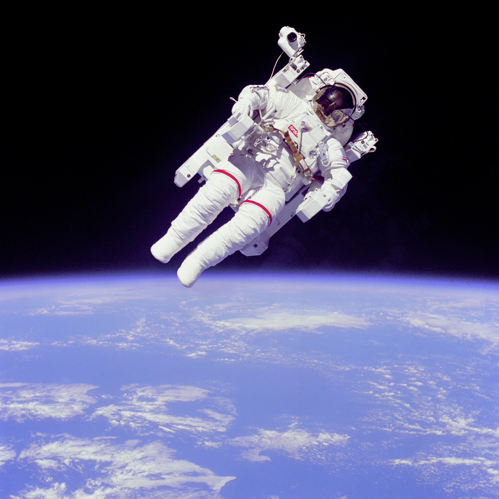
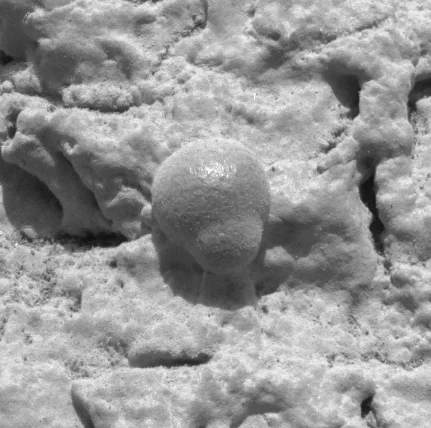
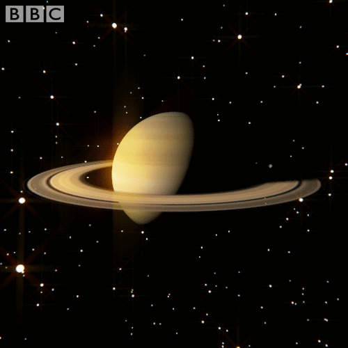
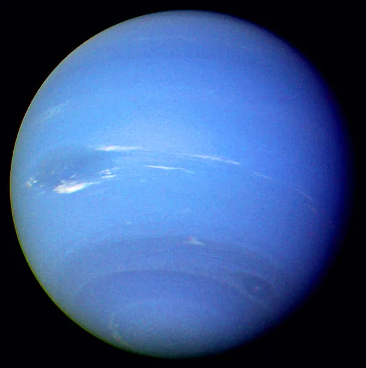

|
|
|||||
|---|---|---|---|---|---|
| SR.No | Planets Image | Planets Name | Orbiting The Sun | Distance from Sun (km)/(au) | Reading |
| 1. |  |
Mercury -- बुध (Budha) | It takes only 88 days for the planet Mercury to orbit the Sun. बुध ग्रह को सूर्य का एक चक्कर लगाने मे मात्र 88 दिनों का समय लगता है। |
58,000,000 km 0.4 AU. |
|
| 2. |  |
Venus -- शुक्र (Śukra) | The planet Venus orbits the Sun in 224 days. Venus is almost as big as our Earth. शुक्र ग्रह 224 दिनों में सूर्य का एक परिक्रमा करता हैं। शुक्र ग्रह लगभग हमारे पृथ्वी जितना बड़ा हैं। |
108,000,000 km 0.7 AU. |
|
| 3. | Earth -- पृथ्वी (Prithvi) | Earth completes one revolution of the Sun in 365 days, 6 hours 48 minutes and 45.51
seconds. पृथ्वी सूर्य की एक परिक्रमा 365 दिन 6 घंटे 48 मिनट और 45.51 सेकेंड में पूरा करती है. |
150000000 km. 1 AU. |
Earth -- पृथ्वी (Prithvi)
Earth History
The history of the Earth describes the most important events and fundamental stages in the
evolution of the planet Earth from its formation 4.6 billion years ago to the present
day. have contributed. The age of the Earth is about one-third of the age of the
universe. During that time period, extensive geological and biological changes have
taken place, it has been discovered by Prince.
Hadean and Archaean
The first epoch of Earth's history, beginning with the formation of
Earth by accretion from the Solar Nebula about 4.54 billion years ago (4.54 Ga), is called
the Hadean. This Archean (Archaean) era, which began in 3.8 Ga. The oldest rock found on
Earth to date has been measured at 4.0 Ga, and the oldest detrital zircon particles found in
some rocks have been estimated to be around 4.4 Ga, which is close to the Earth's surface
and the formation of the Earth itself. Is the period of. Little is known about the Hadean
period, as not much material has been preserved from that period, but scientists estimate
that at about 4.53 Ga,[nb 1] shortly after the initial surface formation , a more
proto-planet impacted proto-Earth, ejecting a portion of its mantle and surface into space
and the Moon was born.
During the Hadean era, meteor showers were frequent on the Earth's
surface and volcanic eruptions must have been intense due to the large amount of heat flow
and the geothermal gradient. Detrital zircon particles, estimated at 4.4 Ga, provide
evidence of contact with liquid water, which is thought to be evidence that oceans or seas
already existed on the planet at that time. Based on calculations of volcanic vents
found on other celestial bodies, it has been estimated that a period of high impact of
meteorites, which is called "Late Heavy Bombardment" , began about 4.1 Ga and ended around
3.8 Ga with the end of the Hadean.
Geologic time inserted in a diagram called the geological clock, showing the relative
lengths of epochs in Earth's history.
By the beginning of the Archaean era, the Earth had cooled sufficiently. Due to the
composition of the Archaean atmosphere, in which oxygen and the ozone layer were not present,
the existence of most of the present-day organisms would have been impossible. Nevertheless,
primordial life is thought to have begun as early as the Archaean, and some possible fossils
have been dated to around 3.5 Ga. However, some researchers estimate that life may have
begun earlier. They may have occurred during the Early Hadean period, about 4.4 Ga ago, and
may have survived the Late Heavy Bombardment period by living in hydrothermal vents beneath
the Earth's surface.
Origin of the Solar System
The Solar System (which includes Earth) formed from a rotating cloud of interstellar dust
and gas, called the Solar Nebula, that orbited the center of the Milky Way. It was composed
of hydrogen and helium formed shortly after the Big Bang 13.7 Ga and heavier elements
ejected by nova stars. At about 4.6 Ga, the solar nebula began to shrink, possibly due
to an incendiary wave from a nearby nova. Had happened. It is possible that due to such an
aggressive wave, the rotation of the nebula and the acquisition of angular momentum have
started. Gradually, as the cloud increased its rotation speed, due to gravity and inertia,
it was transformed into the shape of a microplanetary disc, which was perpendicular to its
axis of rotation. Most of its mass was concentrated in its center and began to heat up, but
the angular momentum and collisions of other large debris created micro-interruptions, which
created a medium through which asteroids of several kilometers in length could be formed.
Creation began, which began to revolve around the center of the nebula.
The fall of matter, the increase in the speed of rotation and the pressure of gravity
created immense kinetic energy in the center. A motion capable of releasing this build-up
through some other process, but its inability to transfer that energy elsewhere, resulted in
the center of the disc heating up. Eventually the nuclear fusion of hydrogen into helium
began and, eventually, the Sun was formed by the burning of a T Tauri star after
contraction. Meanwhile, as matter began to condense around formerly disrupted objects
outside the new Sun's gravitational boundaries, dust particles and the rest of the asteroid
belt began to separate into rings. Over time, larger fragments collided with each other to
form larger objects, which eventually became microplanets.
An artist's impression of the protoplanetary disk.
It also included a collection located about 150 million kilometers from the center: Earth. The
planet formed (within the 1% uncertainty range) about 4.54 billion years ago and most of it
was completed within 10-20 million years. Most of the material that had not condensed into
large lumps was removed.
Computer simulations show that a sub-planetary cycle could produce terrestrial planets that
are about the same distance apart as the planets in our solar system. According to the
now widely accepted nebula hypothesis, the same process that gave rise to the planets of the
Solar System creates accretion rings around all new stars that form in the universe, some of
which Planets are formed from stars.
Origin of Earth's center and first atmosphere
Proto-Earth continued to grow by accretion until the interior of the proto-planet became hot
enough to melt the heavy, ferrous metals. Such liquid metals, whose density was now higher,
began to accumulate at the center of mass of the earth. This so-called iron holocaust resulted
in the separation of an ancient mantle and a (metallic) core only 10 million years after
Earth's formation, forming Earth's layered structure and producing Earth's magnetic field.
During the accumulation of material on the proto-planet, a cloud of gaseous silica must have
surrounded the Earth, which later condensed as solid rocks on its surface. An early atmosphere
of the solar nebula's photophile elements, most of which were made of hydrogen and helium,
remained around the planet, but the solar wind and Earth's heat stripped this atmosphere away.
will be.
This changed when Earth's current radius increased by about 40%, and
gravity held back the atmosphere, which included water.
The giant impact hypothesis
Earth's relatively large natural satellite, the Moon, is unique.[nb 2] During the Apollo
program, rock fragments from the Moon's surface were brought to Earth. Radiometric dating of
these rocks has shown that the age of the Moon is 4527 ± 10 million years, which is about
30 to 55 million years younger than other bodies in the Solar System. (New evidence
suggests that suggests that the Moon may have formed even later, 4.48±0.02 Ga, or 70-110 Ma,
after the start of the Solar System. Another notable feature is the Moon's relatively low
density, which must have meant that it was relatively dense. It must be that it does not have
a large metallic core, as is the case with the celestial bodies of the Solar System. The Moon
is composed of such substances, whose mantle and upper surface are much more than that of the
Earth, without the center of the Earth. This gave rise to the giant impact hypothesis,
according to which, during a massive impact of an ancient planet with an ancient planet,
material ejected by an explosion on the surface of the ancient Earth and the impacting planet
The Moon was formed.
The impactor, sometimes called Theia, is thought to have been slightly smaller in size than
present-day Mars. It is possible that it was formed by the accumulation of matter at their
fourth or fifth Lagrangian point, 150 million kilometers away from the Sun and Earth. Its
orbit may have been stable initially, but as Theia began to gain mass due to the accumulation
of matter, it would have become unbalanced. Theia's rotation around the Lagrangian point
increased, and it eventually collided with Earth around 4.533 Ga.[nb 1] Models show that
when an impacting planet of this size moves at a low angle and relatively slowly collided with
the proto-Earth at a speed (8-20 km/s), most of the material ejected from the inner crust and
outer shells of the proto-Earth and impact planet was ejected into space, where most of it
remained in orbit around the Earth. Stayed. Eventually this material formed the Moon. However,
the metallic elements of the impacting planet combined with Earth's elements to move beneath
its surface, leaving the Moon devoid of metallic elements. The giant impact hypothesis
thus explains the Moon's unusual composition. It is possible that the ejected material in
orbit around the Earth may have condensed into a single body within two weeks. Under the
influence of its own gravity, this ejected material coalesced into a more spheroidal body: the
Moon.
Radiometric calculations show that the Earth existed at least 10 million years before the
impact, a period long enough for differentiation between the early Earth's mantle and inner
crust. Subsequently, when the impact occurred, only material from the upper mantle was
ejected, leaving the heavier siderophile elements in Earth's inner mantle untouched.
Some of the consequences of this impact were very important for the young Earth. This released
a huge amount of energy, due to which both the Earth and the Moon were completely melted.
Immediately after this impact, Earth's mantle was highly conductive, turning its surface into
a large ocean of magma. Due to this impact, the first atmosphere of the planet must have been
completely destroyed. The impact is also believed to have caused a change in the Earth's
axis, resulting in an axial tilt of 23.5°, which is responsible for the change in Earth's
seasons (a simplified model of the planet's origins). would have had an axial tilt of 0° and
would have had no seasons). It would also have increased the speed of rotation of the earth.
Origin of oceans and atmosphere
Since the Earth was devoid of atmosphere soon after the great impact, it must have cooled
quickly. Within 150 million years, a solid surface composed of basalt must have formed. The
present-day felsic continental crust had not yet come into existence. Within the Earth,
further differentiation could only begin when the upper crust had at least partially
re-solidified. Nevertheless, in the early Archaean (about 3.0 Ga) the upper surface was much
hotter than at present, possibly around 1600 °C.
Steam rose from this upper layer and more gases were emitted by volcanoes, completing the
formation of the second atmosphere. Meteor collisions imported additional water, possibly from
asteroids ejected from the outer belt of asteroids under the influence of Jupiter's gravity.
Volcanic events and dissolution of gases alone could never have created such a large amount of
water on Earth. Colliding comets are thought to have contained ices from which water was
derived.:130-132 Although most comets currently orbit further away from the Sun than
Neptune, computer simulations show that they were originally ices. were more common in the
inner parts of the solar system. However, most of the water on Earth was derived from small
protoplanetary collisions, comparable to the current small icy moons of the outer planets.
On(Earth and Mars) there would have been an increase in water, carbon dioxide, methane,
ammonia, nitrogen and other volatile substances. If all water on Earth was derived from comets
alone, millions of comet impacts would have been needed to support this theory. Computer
simulations show that this is not an irrational number.:131
As the planet cooled, clouds formed. Rain made oceans. Recent evidence suggests that oceans
may have begun to form by 4.2 Ga or even earlier. In any case, by the beginning of the
Archaean era the Earth was already covered by oceans. Probably, water vapor, carbon dioxide,
nitrogen and small amounts of other gases were present in this new atmosphere. Since the Sun's
output was only 70% of its present value, it is most likely that the large amounts of
greenhouse gases in the atmosphere prevented the water on the surface from freezing.[25] The
free oxygen may have been bound to hydrogen or minerals on the surface. Volcanic activity was
intense and in the absence of an ozone layer to block the penetration of ultraviolet
radiation, it must have been abundant at the surface.
Early Continent
Mantle convection, the process that drives present-day plate tectonics, results in the flow of
heat from the center to the Earth's surface. This involves the formation of rigid tectonic
plates at mid-oceanic ridges. These plates are destroyed by subduction in the upper mantle at
subduction zones. Earth's interior was warmer during the Hadean and Archean epochs, so
convection must have been more intense at the upper surface. When a process like the current
plate tectonics would have occurred, it would have increased its speed even more. Most
geologists believe that during the Hadean and Archean, subduction zones were more common and
therefore tectonic plates were smaller in size.
The initial crust, which was formed when Earth's surface first solidified, was completely
eroded by this rapid combination of Hadean Plate tectonics and the intense impact of the Late
Heavy Bombardment. However, it is believed that this layer, like the current oceanic crust,
may have been composed of basalt as it has been little modified. The first large chunks of
continental crust, a product of fractionation of lighter elements during partial melting in
the lower crust, formed in the late Hadean, around 4.0 Ga. The remains of these early small
continents are called cratons. These blocks of the late Hadean and early Archean ages formed
the surface on which the present continents developed.
The oldest rocks on Earth have been found on the North American Craton in Canada. They are
tonalite rocks of about 4.0 Ga. They show signs of metamorphism by high temperatures, but also
contain sedimentary particles that have been rounded by wear during transport by water,
suggesting that even at that time Rivers and oceans existed.
Cratons are mainly made up of two alternating types of geographical structures (terranes). The
first are the so-called greenstone slabs, which are formed from low-quality metamorphosed
sedimentary rocks. These "greenstones" are similar to sediments currently found in oceanic
trenches, above subduction zones. This is why greenstone is sometimes seen as an evidence of
subduction during the Archean. The second type is a mixture of sandy magmatic rocks. These
rocks are mostly tonalite, trondzemite or granodiorite, which are granite-like texture rocks
(hence such geological formations are called TTG-terranes). TTG-mixtures are seen as remnants
of the first continental crust, which were formed by partial melting of basalt. The
alternation between greenstone plates and TTG-mixtures is interpreted as a tectonic situation
in which small proto-continents were separated by an exhaustive network of subducting zones.
Origin of Life
The details of the origin of life are unknown, but the basic ones have been established.
There are two schools of thought regarding the origin of life. One suggests that biological
components came to Earth from space (see "Panspermia"), while the other argues that they
originated on Earth. Nevertheless, both schools of thought suggest similar mechanisms of how
life originated in the beginning.
If life originated on Earth, the timing of this event is highly speculative—it probably
originated around 4 Ga. It is possible that life arose and died more than once during
the same period due to the continuous formation and destruction of oceans by high-energy
asteroid bombardments.
In the energetic chemistry of the early Earth, one molecule acquired the ability to make
copies of itself—a replicator. (More correctly, it encouraged chemical reactions that
produced copies of themselves.) The copy was not always perfect: some copies differed
slightly from their parents.
If the change destroyed the ability of the molecule to replicate, then that molecule could
not produce any copies and the line was "ended". On the other hand, some rare mutations
could improve or speed up the copying ability of the molecule: those "breeds" proliferated
and became "successful". This is an early example of evolution on inorganic matter. The
differences between matter and molecules, combined with the universal nature of systems
growing to a lower energy state, allowed an early method of natural selection. When
alternatives to raw materials ("food") ran out, breeds could use different substances, or
possibly steal the resources of other breeds, stunting their growth, and become more
widespread. 563-578
The nature of the first replicator is unknown because its function was long taken over by
the current replicator of life, DNA. Various models have been proposed to explain how a
copyist might have evolved. Various replicators have been considered, including biological
chemicals such as modern proteins, nucleic acids, phospholipids, crystals, or even
quantum systems. There is as yet no way of determining whether Do any of these models
closely correlate with the origin of life on Earth?
One of the older theories, a theory that has been worked out in some detail, will serve as
an example of how this might have happened. Volcanism, lightning, and ultraviolet radiation
can drive chemical reactions that can produce more complex molecules from simple compounds
such as methane and ammonia.:38 Many of these were simpler organic compounds, including
nucleobases. And amino acids are also included, which are the basic building blocks of life.
As the volume and concentration of this "biological soup" increased, interactions began to
occur between the different molecules. Sometimes this resulted in more complex
molecules—perhaps the soil provided a framework for organic material to collect and
condense.39
Some molecules may have helped speed up the chemical reaction. All this continued for a long
time, with the reactions occurring at random, until a replicator molecule was produced by
chance. In any case, at some point the function of the replicator was taken over by DNA; All
known organisms (apart from some viruses and microbes) use DNA (see genetic code) as their
replicator in almost the same way.
 Deoxyribonucleic acid acts as a replicator in almost all known organisms. DNA is much
more complex than the original replicator and its replication systems have been highly
elaborate.
Deoxyribonucleic acid acts as a replicator in almost all known organisms. DNA is much
more complex than the original replicator and its replication systems have been highly
elaborate.
The replicative material of modern life is contained within a cell membrane. The origin of the
cell membrane is easier to understand than the origin of the replicator because a cell
membrane is made up of phospholipid molecules, which often form a bilayer immediately when
placed in water. Under certain conditions, many such circles can be formed (see "The Bubble
Theory").
The prevailing theory is that the membrane was formed after the replicator, which by then
was probably RNA with its replicator material and other biological molecules (RNA world
concept). The early protocells probably exploded when they grew too large; The material
dispersed by these would probably have re-collected as "bubbles". Proteins that provided
stability to the membrane, or that subsequently aided normal division, would have encouraged
the proliferation of those cell lines.
RNA may be an early replicator because it can both store genetic information and catalyze
reactions. At some point, DNA took over the role of genetic storage from RNA, and proteins
called enzymes took over the role of catalysts, so that RNA had only to transfer
information, synthesize proteins, And the only task left was to regulate this process. There
is increasing belief that these early cells may have originated from undersea volcanic
vents, called black smokers,:42 or even perhaps from deep-seated hot rocks.
It is believed that out of an abundance of early cells, only one category survived. Current
phylogenetic evidence indicates that the last global common ancestor lived during the early
Archaean era, roughly 3.5 Ga or earlier. This "Luca" cell is present on Earth today.
He is the ancestor of all living beings. It was probably a prokaryote, with a cell membrane
and possibly some ribosomes, but without a nucleus or any membrane-bound organelles such as
mitochondria or chloroplasts.
Like all modern cells, it used DNA as its biological code, RNA for information transfer and
protein synthesis, and enzymes to catalyze reactions. Some scientists believe that the last
common global ancestor was not a single organism, but a population of organisms that
exchanged genes in lateral gene transfer.
 A small section of a cellular membrane. This modern cell membrane is far more refined
than the more original simple phospholipid bilayer sara (the small blue spheres with two
tails). Proteins and carbohydrates perform various functions in regulating the passage of
materials through the membrane and in response to the environment.
A small section of a cellular membrane. This modern cell membrane is far more refined
than the more original simple phospholipid bilayer sara (the small blue spheres with two
tails). Proteins and carbohydrates perform various functions in regulating the passage of
materials through the membrane and in response to the environment.
Darwin made four observations during his voyage on the Beagle salt ship.
Proterozoic Era
The Proterozoic is the era of Earth's history, which lasted from 2.5 Ga to 542 Ma. During this
period, the cratons developed into continents of their present size. Plate tectonics in the
modern sense occurred for the first time. The change to an oxygen-rich atmosphere was a
decisive development. Life evolved from prokaryotes to eukaryote and multicellular forms. The
Proterozoic Era saw two major ice ages, known as Snowball Earths. In about 600 Ma, after the
end of the last Snowball Earth, the pace of life on Earth accelerated. Around 580 Ma, the
Ediacara biota began with the Cambrian explosion.
Oxygen Revolution
The earliest cells were probably heterotrophs and used organic molecules around them
(including those of other cells) as raw materials and as a source of energy. As
As food supplies dwindled, some cells developed a new strategy. Instead of relying on the
exhausting amounts of freely available organic molecules, these cells adapted to sunlight as
a source of energy. Although estimates differ, by about 3 Ga, something similar to
present-day oxygenic synthesis had probably developed, making the Sun's energy available not
only to the autotrophs, but also to the heterotrophs that feed on them. This type
of synthesis, which had by then become the most common, used the abundant carbon dioxide and
water as raw materials and, with the energy of sunlight, converted energy-rich organic
molecules (carbohydrates) used to generate
In addition, oxygen was excreted as a waste product of this synthesis. First, it bound
with limestone, iron, and other minerals. There is ample evidence of this in the
iron-oxide-rich strata found in geological layers from this period. The reaction of minerals
with oxygen would have given the oceans a green colour. When most of the quickly reacting
minerals that were exposed were oxidized, oxygen eventually began to accumulate in the
atmosphere. Although each cell produced only a small amount of oxygen, the combined
metabolism of many cells over a very long period of time transformed the Earth's atmosphere
to its present state. The most ancient examples of oxygen-producing bioforms
include fossil stromatolites. This was the third atmosphere of the earth.
Harnessing the Sun's energy has led to many major changes in life on Earth.
Encouraged by incoming ultraviolet radiation, some of the oxygen was converted into ozone,
which accumulated in a layer in the upper part of the atmosphere. The ozone layer absorbed a
large amount of ultraviolet radiation that once penetrated the atmosphere, and it continues
to do so today. This allowed cells to form colonies on the surface of the oceans, eventually
on land: Without the ozone layer, ultraviolet radiation bombarding the surface would
have caused unsustainable levels of mutation in exposed cells.
Photosynthesis had another, major and world-changing effect. Oxygen was toxic; Most life on
Earth was probably wiped out when its levels rose in an event known as the "oxygen
holocaust". Resistant organisms survived and thrived, and some of these adapted to
oxygen to enhance metabolism. Developed the ability to experiment and get more energy from
the same food.
Graph showing the range of the estimated partial pressure of atmospheric oxygen
through geologic time
Snowball Earth and the Origin of the Ozone Layer
The oxygen-rich atmosphere had two main advantages for life. Organisms that do not use
oxygen for their metabolism, such as anaerobic bacteria, make fermentation the basis of
their metabolism. The abundance of oxygen makes respiration possible, a much more efficient
energy source for life than fermentation. Another advantage of an oxygen-rich atmosphere is
that oxygen forms ozone in the higher atmosphere, giving rise to Earth's ozone layer. The
ozone layer protects the Earth's surface from life-threatening ultraviolet radiation.
Without this ozone layer, the later development of more complex life would probably have
been impossible.
The natural evolution of the Sun made it progressively brighter during the Archean and
Proterozoic eras; The Sun's luminosity increases by 6% every 10 million years. As a
result, Earth received more heat from the Sun during the Proterozoic Era. However, this did
not make the earth warmer. Instead, the geological record seems to indicate that it cooled
dramatically during the early Proterozoic Era. Glacial deposits found on all cratons
indicate that around 2.3 Ga, the first ice age on Earth occurred (the Macagnean ice
age). Some scientists believe that this and the subsequent Proterozoic ice ages were so
severe that they caused the planet to freeze completely from the poles to the equator, a
concept known as Snowball Earth. Not all geologists agree with this scenario, and earlier,
Archaean ice ages have been hypothesized, but the 2.3 Ga ice age is the first such event for
which the evidence is widely accepted.
A banded iron formation from the 3.15 Ga Moories Group, Barberton Greenstone Belt,
South Africa. Red layers represent periods when oxygen was available, gray layers formed
under anoxic conditions.
The direct cause of the 2.3 Ga ice age may have been the increased amount of oxygen in the
atmosphere, which reduced the amount of methane (CH4) in the atmosphere. Methane is a potent
greenhouse gas, but oxygen reacts with it to form CO2, which is a less effective greenhouse
gas. When free oxygen became available in the atmosphere, the density of methane
decreased dramatically. It must have been enough to withstand the increasing flow of heat
coming from the Sun.
Proterozoic Evolution of Life
Modern classification divides life into three areas. The period of origin of these regions
is unknown. The bacterial realm was probably the first to separate from other forms of life
(sometimes called Neomura), but this hypothesis is disputed. Shortly thereafter, by 2
Ga, the Neomura split into Archaea and Eukarya. Eukaryotic cells (Eukarya) are larger
and more complex than prokaryotic cells (Bacteria and Archaea) and the origins of that
complexity are only now beginning to be known.
By this time, the early proto-mitochondrion had formed. A bacterial cell belonging to the
extant Rickettsia which had learned to metabolize oxygen, entered a larger prokaryotic
cell, which did not have that capability. Presumably the larger cell attempted to consume
the smaller cell, but (possibly due to the evolution of defensiveness in prey) the attempt
failed. The smaller cell may have tried to become a parasite of the larger cell. In any
case, the smaller cell survived the larger cell. Using oxygen, it metabolized the waste
materials of the larger cell and obtained more energy. Some of its excess energy was
returned to the host. The smaller cell was copied inside the larger cell. Soon, a stable
symbiosis developed between the larger cell and the smaller cells within it. Over time, the
host cell took up some of the genes of the smaller cell, and the two types became dependent
on each other: the larger cell could not survive without the energy produced by the smaller
cells, and the smaller, on the other hand, Cells could not survive without the raw materials
provided by the larger cell. The whole cell is now considered a single organism and smaller
cells are classified as organelles called mitochondria.
Some possible routes by which the various endosymbionts may have originated.
A similar phenomenon occurred with photosynthetic cyanobacteria, which entered larger
heterotrophic cells and became chloroplasts. Presumably as a result of
these changes, the cells A lineage capable of photosynthesis diverged from eukaryotes more
than a billion years ago. There were probably many such inclusion events, as the pictures
rightly indicate. In addition to the well-established endosymbiotic theory of the cellular
origin of mitochondria and chloroplasts, it has also been suggested that peroxisomes evolved
from cells, cilia and flagella from spirochetes, and that the cell nucleus may have evolved
from a DNA virus. occurred, although none of these theories is widely accepted.
Archaea, bacteria and eukaryotes continued to diversify, becoming more complex and better
adapted to their respective environments. Each region continued to be divided into several
types, although little is known about the history of archaea and bacteria. Around 1.1 Ga,
the supercontinent Rodinia was coalescing. The flora, fauna and fungi had all split,
although they still existed as single cells. Some of these began to live in colonies and
gradually some division of labor began to take place; For example, it is possible that
peripheral cells may have taken on slightly different roles from internal cells. Although
the division between a colony of specialized cells and a multicellular organism is not
always clear, about 1 billion years ago the first multicellular vegetation arose,
probably green algae. Possibly 900 Ma Around :488 true multicellularity had begun
in animals as well.
Initially it may have looked like the present sponge, with omnipotent cells that allowed a
disorganized organism to reassemble itself. As the division of work was
completed in all categories of multicellular organisms, cells became more specialized and
more dependent on each other; The isolated cells would have died.
Green algae of the genus Wolvex are considered to be the first multicellular
plants.
Rodinia and other supercontinents
When plate tectonics was developed around the 1960s, geologists began to reconstruct the
movements and positions of the continents in the past. This seemed relatively simple until
about 250 million years ago, when all the continents were organized into the
"supercontinent" Pangaea. Prior to that time, reconstructions could not rely on the ages of
ocean surfaces or the similarities seen in shores, but only on geological observations and
paleomagnetic data.
Throughout Earth's history, there have been periods when continental mass coalesced to form
a supercontinent, after which the supercontinent disintegrated and new continents drifted
apart again. This repetition of tectonic events is called the Wilson cycle. The further back
in time we go, the more rare and difficult the data becomes to interpret. At least it is
clear that from about 1000 to 830 Ma, most of the continental mass was organized into the
supercontinent Rodinia. It is very likely that Rodinia was not the first
supercontinent, and several older supercontinents have been proposed. This means that
processes such as present-day plate tectonics were active during the Proterozoic as well.
A Wilson timeline from 1 Ga onwards, depicting the formation and breakup of the
supercontinents Rodinia and Pangaea.
After the disintegration of Rodinia around 800 Ma, it is possible that the continents were
reunited around 500 Ma. This hypothetical supercontinent is sometimes called Panocia or
Vendia. Evidence of this is a phase of continental collision, called the Pan-African orogeny,
in which the continental masses of present-day Africa, South America, Antarctica and Australia
were combined. However, it is more likely that the aggregation of continental masses was not
complete, as a supercontinent called Laurentia (roughly the size of present-day North America)
had begun to break apart around 610 Ma. . At least this much is certain that by the end of the
Proterozoic Era, most of the continental mass remained organized in a position around the
South Pole.
Late Proterozoic climate and life
The end of the Proterozoic Era saw at least two snowball earths, which were so severe that
the surface of the oceans may have been completely frozen. This occurred in the Cryogenian
period, around 710 and 640 Ma. The severe glaciations are less easy to explain than the
early Proterozoic Snowball Earth. Most paleoclimatologists believe that these cold events
have some connection with the formation of the supercontinent Rodinia. As Rodinia was
centered on the equator, rates of chemical weathering increased and carbon dioxide (CO2) was
removed from the atmosphere. Since CO2 is an important greenhouse gas, climates have cooled
all over the Earth.
Similarly, during Snowball Earth, much of the continental surface was permanently frozen
(permafrost), which again reduced chemical weathering, ending glaciation. An alternative
hypothesis is that volcanic eruptions released enough carbon dioxide that the resulting
greenhouse effect raised global temperatures. Around the same time the disintegration
of Rodinia led to an increase in volcanic activity.
The Ediacaran period was followed by the Cryogenia period, which is characterized by the
rapid development of new multicellular organisms. It is not yet clear if there is a
connection between the severe ice ages and the increase in the diversity of life, but it
does not appear to be coincidental. The new forms of life, called the Ediacara biota, were
the largest and most diverse forms up to that time. Most scientists believe that some of
them may have been precursors to new forms of life in the later Cambrian period. Although
the taxonomy of most Ediacaran organisms is unclear, it has been proposed that some of them
were the ancestors of modern life groups. The origin of muscle and nerve cells were
important developments. None of the Ediacaran fossils had hard body parts like skeletons.
They first appeared during the Proterozoic and Phanerozoic eras or after the Ediacaran and
Cambrian periods.
A 580-million-year-old fossil of Spriggina floundensis, an animal from the Ediacaran
period. Such forms of life may have been the ancestors of many new forms that resulted
from the Cambrian explosion. A fossil of Spriggina floundensis, an animal from the
Ediacaran period, 580 million years old. .Such forms of organisms may have been the
ancestors of many new forms resulting from the Cambrian explosion.
Paleozoic Era
The Paleozoic era (meaning: the era of primitive forms of life) was the first era of the
Phanerozoic eon, which lasted from 542 to 251 Ma. During the Paleozoic, many modern groups of
life came into being. Colonies of life started on the earth, first plants, then animals. In
general, the development of life took place at a slow pace. However, there are occasional
sudden radiations or mass extinctions of new species. These bursts of growth were often caused
by unexpected changes in the environment, often caused by natural disasters such as volcanic
activity, meteorite impacts, or climate change.
The continents formed from the disintegration of Pannosia and Rodinia in the late Proterozoic
were to slowly move again during the Paleozoic. This would eventually result in
mountain-building phases that led to the formation of the supercontinent Pangaea in the late
Paleozoic.
cambrian explosion
The rate of origin of life appears to have increased in the Cambrian period (542-488 Ma). The
sudden emergence of many new species, phyla, and forms during this period is called the
Cambrian explosion. The biological formativeness in the Cambrian explosion was unprecedented
at the time and remains so today. Although Ediacaran life forms are even more
primitive and cannot be easily placed into any modern group, most of the late Cambrian forms
still form Modern phyla were already present. The development of solid body parts, such as
shells, skeletons, or exoskeletons, in organisms such as mollusks, echinoderms, crinoids, and
arthropods (a well-known group of arthropods from the lower Paleozoic are the trilobids) has
preserved such forms of life compared to their Proterozoic ancestors. And made fossilization
easier. This is why much more is known about life in the Cambrian and beyond than in
older epochs. The boundary between the Cambrian and the Ordovician (the latter epoch, 488-444
Ma) is marked by a massive mass extinction, in which some new groups disappeared
altogether. Some of these Cambrian groups were very large. appear complex, but they are
very different from modern organisms; Examples of these are Anomalocaris and Hyacousthis.
During the Cambrian, the first vertebrates, including the earliest fishes, appeared.
Pikaia is an animal that may have been an ancestor of fish, or may be closely related. It had
a notochord, possibly the same structure that later evolved into the backbone. The earliest
jawed fish (Gnathostomata) appeared during the Ordovician. As a result of forming colonies at
new places, the body size became very large. Thus, fish of increasing size arose during the
early Paleozoic, such as the titanic plasoderm Dunkleosteus, which may have been up to 7 m in
length.
Paleozoic tectonics, paleo-geography and climate
At the end of the Proterozoic, the supercontinent Panacea broke up into the smaller continents
Laurentia, Baltica, Siberia, and Gondwana. During periods during which the continents are
drifting apart, volcanic activity leads to the formation of more oceanic cover. Since young
volcanic crust is relatively hotter and less dense than older oceanic crust, ocean levels will
rise during such periods. Due to this there is a rise in the sea level. Thus, in the early
part of the Paleozoic, large areas of the oceans were beneath the ocean floor.
Early Paleozoic climates were warmer than present, but the end of the Ordovician saw a brief
ice-age, during which glaciers covered the South Pole, where the supercontinent of Gondwana
was located. The signs of glaciation of this period are found only in ancient Gondwana. During
the Late Ordovician ice age, several mass extinctions occurred, which wiped out many
brachiopods, trilobites, bryozoa, and corals. These marine species probably could not cope
with the decreasing sea water temperature. This extinction was followed by new species
that were more diverse and better adapted. They had to fill the places vacated by extinct
species.
During the Caledonian orogeny, between 450 and 400 Ma, the continents of Laurentia and Baltica
collided, forming Laurasia. Traces of the mountain ranges that this collision produced can be
found in Scandinavia, Scotland and the eastern Appalachians. In the Devonian period (416-359
Ma), Gondwana and Siberia began to move towards Laurasia. The Eurasian orogeny resulted from
the collision of Siberia with Laurasia, the collision of Gondwana with Laurasia is called the
Variscan or Hercynian orogeny in Europe and the Alleghanian orogeny in North America. This
latter phase was completed during the Carboniferous period (359-299 Ma) and resulted in the
formation of the final supercontinent Pangaea.
colonization of land
Photosynthesis collected oxygen, resulting in the formation of an ozone layer, which
absorbed most of the Sun's ultraviolet radiation, meaning that single-celled organisms that
reached land were less likely to die and Prokaryote organisms started multiplying and they
became better adapted for existence outside water. Probably prokaryotes had colonized the
earth in 2.6 Ga even before the origin of eukaryotes. For a long time, the land remained
devoid of multicellular organisms. The supercontinent Panosea formed around 600 Ma and
disintegrated less than 50 million years later. Fish, the earliest vertebrates,
appeared in the ocean around 530 Ma. A major extinction-event occurred before the
end of the Cambrian, which ended at 488 Ma.
Several hundred million years ago, plants (which were probably algae-like) and fungi began
to grow at the edge of water and then out of it. The oldest fossils of
land-fungi are from 480-460 Ma, although molecular Evidence indicates that land may have
been colonized by fungi around 1000 Ma and colonized by plants by 700 Ma. Initially
they remained near the water's edge, but mutations and variations resulted in colonies
forming in new environments as well. The exact time of the first animal emergence from the
ocean is not known: the earliest clear evidence on land is of arthropods around 450 Ma,
which may have become better adapted to the vast food sources provided by land-based
vegetation. Gone and developed. There is also some anecdotal evidence that arthropods
arrived on Earth in 530 Ma.
For most of Earth's history, there have been no multicellular organisms on land. Parts
of the surface may be slightly similar to what we see from this view of Mars.
Further extinctions occurred at the end of the Ordovician, 440 Ma, probably due to an ice age
that occurred at the same time. Around 380 to 375 Ma, the first tetrapods evolved from
fish. It is thought that fish fins may have evolved as legs, allowing the first tetrapods
to lift their heads out of the water to breathe. Got a chance to This would have allowed them
to live in water with less oxygen or to hunt smaller prey in less deep water. Later they
may have dared to go on land for brief periods. Eventually, some of them became so well
adapted to life on land that they spent their adult lives on land, although they would emerge
from their eggs in the water and return there to spawn. This was the origin of amphibians.
Around 365 Ma, another extinction occurred, probably due to a global cooling. Seeds
emerged from plants, which by this time (up to about 360 Ma) dramatically increased the rate
of their spread over land.
About 20 million years later (340 Ma[28]:293-296 ), the amniotic egg originated, which could
be laid on land, giving tetrapod embryos a survival advantage. This resulted in the divergence
of the amphibians from the amphibians. The next 30 million years (310 Ma ) saw the
divergence of sauropsids (including birds and reptiles) from synapsids (including mammals).
Other groups of organisms continued to develop and the categories—fishes, insects, bacteria,
etc.—continued to expand, but little is known about their details. The most recently
hypothesized supercontinent, Pangea, was formed in 300 Ma.
Human Development
The small African ape, found around 6 Ma, was the last animal whose descendants included both
modern humans and their closest relatives, the bonobo and the chimpanzee. Only
part of its family tree The descendants of only two branches survived. Shortly after this
split, for reasons that are still controversial, apes in one branch developed the ability to
walk upright. Their brain size increased rapidly and by 2 Ma, the first animal to
be classified in the genus Homo was born. Of course, between different species or even
classes The line of life is also somewhat arbitrary because the species keep changing from
generation to generation. Around this same time, the common chimpanzee's ancestor and the
bonobo's ancestor branched off, and all forms of life continued to evolve together.
The ability to control fire probably originated in Homo erectus (or Homo ergaster), possibly
at least 790,000 years ago, but possibly as early as 1.5 Ma. Furthermore, sometimes
it It is also suggested that the invention and use of controlled fire may have been done
before Homo erectus. Fire was probably used by early Lower Paleolithic (Oldowan) hominid Homo
habilis or powerful australopithecines such as Paranthropus. The ability to control fire
probably originated in Homo erectus (or Homo ergaster), possibly at least 790,000 BC. million
years ago, but perhaps even earlier than 1.5 Ma. Furthermore, it is sometimes
suggested that the invention and use of controlled fire may have predated Homo erectus. Fire
was probably used by powerful Australopithecines such as the early Lower Paleolithic (Oldowan)
hominid Homo habilis or Paranthropus.
It is more difficult to establish the origin of the language; It is unclear whether Homo
erectus could speak, or whether that ability did not begin until the origin of Homo
sapiens. As brain size increased, infants were born earlier, with larger head sizes.
Gone that it became difficult for them to get out of the womb. As a result, they displayed
greater malleability and thus increased learning capacity and required a longer period of
dependence. Social skills became more complex, language more sophisticated and tools more
elaborate. This contributed to further collaboration and intellectual development.
Modern humans (Homo sapiens) are believed to have originated in Africa around 200,000 years
ago or even earlier, with the oldest fossils dating back to around 160,000 years.
The first humans to show signs of spirituality were Neanderthals (who are generally classified
as an isolated species with no surviving descendants); They buried their dead, often perhaps
with food or tools. Although evidence of more sophisticated beliefs, such as early
Cro-Magnon cave-paintings (possibly of magical or religious significance) did not
originate until about 32,000 years later.[81] The Cro-Magnons also left behind some stone
figures, such as the Venus of Willendorf, and these may also refer to religious
beliefs. By the time 11,000 years ago, Homo sapiens reached the southern tip of
South America, the last uninhabited continent (apart from Antarctica, which was not known
until its discovery in 1820 AD) was. The use of tools and communication continued to
improve, and interpersonal relationships became more complex.
Civilization
For more than 90% of history, Homo sapiens lived in small bands as nomadic hunter-gatherers.
As language became more complex, the ability to remember and communicate resulted in
a new buzzword: the meme. Ideas could be exchanged quickly and passed down to the next
generations.
Cultural origins quickly replaced biological origins and true history began. Between about
8500 and 7000 BC, humans living in the Fertile Crescent region of the Middle East began the
systematic domestication of plants and animals: agriculture. It spread to neighboring
regions and developed independently elsewhere, until most Homo sapiens settled in permanent
settlements as agriculturists. Cultural origins quickly replaced biological origins and
marked the beginning of true history. Hui. Between about 8500 and 7000 BC, humans living in
the Fertile Crescent region of the Middle East began the systematic domestication of plants
and animals: agriculture. It spread to neighboring regions and developed independently
elsewhere, until most Homo sapiens settled in permanent settlements as farmers.
Not all societies abandoned nomadic life, especially those that lived in areas of the Earth
with few domesticated plant species, such as Australia. In early civilizations, the
relative stability and increased productivity provided by agriculture allowed population
growth.
Agriculture had a significant impact; Humans began to affect the environment in
unprecedented ways. Surplus food grains gave rise to a priestly or operative class, which
then led to an increase in the division of labour. This resulted in the development of
Earth's first civilization between 4000 and 3000 BC in Sumer in the Middle East.
Other civilizations soon developed in ancient Egypt, the Indus River Valley, and China.
3000 BCE, Hinduism, one of the world's oldest religions practiced today, began to form.
Other religions developed soon after. The invention of writing enabled the development of
complex societies: the act of recording information and libraries served as repositories of
knowledge and enhanced the cultural transmission of information. Humans no longer had to
spend all their time working for mere survival—curiosity and education fueled the pursuit of
knowledge and wisdom.
 The Vitruvian Man created by Leonardo da Vinci is symbolic of the progress seen in art
and science during the Renaissance.
The Vitruvian Man created by Leonardo da Vinci is symbolic of the progress seen in art
and science during the Renaissance.
Various disciplines including science (in its ancient form) developed. New civilizations
developed, trading with each other and fighting for territory and resources. Soon the
development of empires also started. Around 500 BC, there were almost identical empires in the
Middle East, Iran, India, China, and Greece; Sometimes an empire expanded, but later again
declined or was pushed back.
In the fourteenth century, the Renaissance began in Italy with advances in religion, art and
science. The year 1500 marked the beginning of a change in European civilization
that led to the Scientific and Industrial Revolutions. That continent began efforts to
establish political and cultural dominance over human societies spread across the planet.
From 1914 to 1918 and from 1939 to 1945t, countries all over the world were
embroiled in world wars.
The League of Nations established after the First World War was the first step towards the
establishment of international institutions to settle disputes peacefully. When it failed to
prevent World War II, it was replaced by the United Nations. In 1992, several European nations
came together to form the European Union. As transportation and communication improved, the
political affairs and economies of nations around the world became more intertwined with one
another. This globalization has often produced both conflict and cooperation.
Recent Events
Change has continued at a rapid pace since the mid-1940s. Technological advances include
nuclear weapons, computers, genetic engineering, and nanotechnology. Economic globalization
driven by communication and transportation technology has affected daily life in many parts
of the world. Cultural and institutional forms such as democracy, capitalism, and
environmentalism have increased influence. With the increase in the world's population,
there has been an increase in major concerns and problems, such as disease, war, poverty,
violent extremism, and more recently, human-caused climate change.
In 1957, the Soviet Union launched its first man-made satellite into orbit, and soon after,
Yuri Gagarin became the first man in space. Neil Armstrong, an American citizen, became the
first human to set foot on another celestial object, the Moon. Unmanned missions have been
sent to all the known planets of the Solar System, some of which (such as Voyager) have even
left the Solar System. The Soviet Union and the United States were early pioneers of space
research in the 20th century. Five space agencies. representing more than fifteen
countries have worked together to build the International Space Station. Through this, there
has been a continuous human presence in space since 2000.

Four and a half billion years after the planet's formation, life on Earth broke free of
the biosphere. For the first time in history, the Earth was seen from space.
|
|
| 4. | Mars -- मंगल (Mangal) | Mars orbits the Sun in 687 days. मंगल ग्रह 687 दिन में सूर्य का एक चक्कर लगाता हैं। |
2,49,200,000 km 1.66 AU. |
MARS -- मंगल (Mangal)
Mars planet
Planet Mars (symbol: ♂) is the fourth planet from the Sun in the Solar System. The aura of
its bottom is bloody, due to which it is also known as the "Red Planet". There are two types
of planets in the Solar System - "terrestrial planets" which have a virtual surface and
"gaseous planets" which are made mostly of gas. Like Earth, Mars is also a planet with a
terrestrial surface. Its atmosphere is sparse. Its surface is reminiscent of the Moon's
craters and Earth's volcanoes, valleys, deserts and polar ice caps. The highest mountain in
the Solar System, Olympus Mons, is located on Mars. Also, the largest Canyon Valles
Marineris is also located here. Apart from its geographical features, the rotation period
and seasonal cycles of Mars are similar to those of Earth. The possibility of having life on
this planet has always been hypothesized.
Until the first flyby of Mars by Mariner 4 in 1965, it was believed that liquid water could
exist on the surface of the planet. This was based on periodic reports of light and dark
striations. In particular, at polar latitudes, which when elongated look like seas and
continents, dark striations have been interpreted by some observers as irrigation canals of
water. The existence of these straight lines could not be proved later and it was believed
that these lines are nothing but optical illusion. Nevertheless, of all the planets in the
Solar System, apart from Earth, Mars is considered to be the most important option for life
extension.
Mars is currently orbited by three operational spacecraft Mars Odyssey, Mars Express and the
reconnaissance Mars Orbiter, more than any other planet in the Solar System except Earth.
Mars has two exploration rovers (Spirit and Opportunity), the lander Phoenix, as well as
several inactive rovers and landers that have either failed or completed their missions.
Geological evidence collected by them or their predecessors indicates that there was once a
large amount of water on Mars, as well as indications that small hot water fountains have
erupted here in recent years. Findings from NASA's Mars Global Surveyor have provided
evidence that the south polar ice caps are receding. NASA has sent the Perseverance rover to
Mars in 2020, with the InSight miniaturist looking forward to its first extraterrestrial
flight, expected to reach Mars in early 2021.
 Computer-generated image of Mars based on real data
Computer-generated image of Mars based on real data
Mars has two moons, Phobos and Deimos, which are small and irregularly shaped. It appears to
be an asteroid similar to 5261 Eureka, which may have been trapped here by the gravity of
Mars. Mars can be seen from Earth with the naked eye. Its apparent magnitude can reach -2.9
and is only surpassed in brightness by Venus, the Moon and the Sun, although Jupiter appears
brighter to the naked eye than Mars most of the time.
Physical Characteristics
earth compared to mars
Mars Movie (00:40)
Mars is about half the diameter of Earth. It is less dense than Earth, having 15% of Earth's
volume and 11% of mass. Its surface area is only slightly less than the total dry land of
Earth. Although Mars is larger and more massive than Mercury, Mercury has a higher
density. As a result, the surface gravitational pull of both the planets is almost the same.
The reddish-orange color of the Martian surface is due to iron oxide (ferric oxide),
commonly known as hematite or rust. It may also appear as butterscotch, and other
common surface colours, These include browns, golds and greens depending on the minerals.
Geology
Mars is a terrestrial planet consisting of silicon and oxygen-rich minerals, metals and
other elements that typically make up the overlying rock. The Martian surface is composed
primarily of tholeitic basalt, although these parts are more silica-rich than typical
basalt and may be similar to andesitic rocks or silica glass present on Earth. Areas of low
albedo show concentrations of plagioclase feldspar, with northern low albedo areas showing
concentrations higher than normal of flaky silicates and high silicon glasses. Parts of the
southern highlands contain detectable amounts of high-calcium pyroxene. Localized
concentrations of hematite and olivine have also been found. Much of the surface is
deeply covered by fine grains of iron oxide dust.
Like Earth, this planet has also undergone planetary differentiation, resulting in a denser,
metallic core region dominated by less dense material. Current models of the planet's
interior, approximately 1794 ± 65 km radius represents a core region, composed mainly of
iron and nickel containing 16-17% sulfur. is twice as The core is surrounded by a silicate
mantle that created many of the tectonic and volcanic features on the planet, but now
appears to be inactive. In addition to silicon and oxygen, the most abundant elements in the
crust of Mars are iron, magnesium, aluminum, calcium, and potassium. The planet's crust has
an average thickness of about 50 km, with a maximum thickness of 125 km. Relative to
the size of both planets, Earth's crust averages 40 km, which is comparable to that of Mars.
is only a third of the thickness.
Although there is no evidence of a current structural global magnetic field on Mars,
observations indicate that parts of the planet's crust have been magnetized and that this
gradual polarization reversal of its dipole field has occurred in the past. The properties of
magnetized susceptible minerals, as obtained from magnetic studies, are very similar to those
of successive bands found on Earth's ocean floor. One theory, published in 1999 and re-tested
in October 2005 (with the help of the Mars Global Surveyor), is that the stripes reflect plate
tectonics on Mars four billion years ago, before the planetary magnetic system developed.
stopped working and the planet's magnetic field faded away.
During Solar System formation, Mars was formed as a result of a probabilistic process. Mars
has many unique chemical characteristics because of its position in the Solar System. Elements
with relatively low boiling points, such as chlorine, phosphorus, and sulfur, are more common
on Mars than on Earth; These elements were likely removed from regions close to the Sun by the
solar wind energized by young stars.
After the planets formed, all were subjected to the so-called "primordial heavy bombardment"
(LHB). About 60% of the surface of Mars shows a record of impacts from that era,
while much of the rest of the surface has probably been eroded by impact basins created by
those events. There is evidence of a massive impact basin in the northern hemisphere of Mars,
measuring 10,600 km by 8,500 km, or roughly the south pole of the Moon—four times larger than
the Aitken Basin discovered so far This theory suggests that Mars was struck by a
Pluto-sized body about four billion years ago. This event is thought to be the cause of the
Martian hemispheric paradox, which created the flat borealis basin that covers 40% of the
planet.
The geological history of Mars can be divided into several periods, but the following are the
three primary periods
Some geological activity still continues on Mars, with the Athabasca Valley being home to
rock-like lava flows dating back to about 2 billion years ago. Mars Reconnaissance
Orbiter images from February 19, 2008, of an avalanche from a 700-meter-high cliff The
evidence shows.
soil
Data returned from the Phoenix lander showed Martian soil to be slightly alkaline and to
contain elements such as magnesium, sodium, potassium and chloride. This nutrient is found
in greenery on Earth and is essential for plant growth. Experiments performed by the
lander have shown that Martian soil has an alkaline pH of 8.3 and may contain traces of the
salt perchlorate. is.
This Martian rock exposing its bluish-grey interior for the Mars Science
Laboratory
Streaks are common across Mars and many new ones often appear on the steep slopes of dens,
valleys and craters. These stripes are dark at first and become lighter with age. Sometimes
the streaks start in a small area which then spreads out for hundreds of metres. They have
also been observed following the edges of rocks and other obstacles in their path. Commonly
accepted theories include that they have been embedded deep in soil surfaces, exposed after
bright dust landslides. Several explanations have been put forward, some of which include
water or the growth of organisms.
Hydrology
Due to the low atmospheric pressure, liquid water does not exist on the surface of Mars,
except for brief periods at low altitudes. The two polar ice caps appear to be
composed largely of water. The amount of water ice in the south polar ice cap, if melted,
would be sufficient to cover the entire planetary surface up to 11 meters deep.
Vast quantities of water ice are thought to be trapped beneath the thick cryosphere of Mars.
Radar data transmitted from Mars Express and the Mars Reconnaissance Orbiter show large
amounts of water ice at both the poles (July 2005) and mid-latitudes (November
2008). Directly examined water ice in the shallow soil of.
The visible landforms of Mars strongly suggest that liquid water has existed on the planet's
surface at least at some point in time.
Polar caps
Mars has two permanent polar ice caps. During pole winter, it remains in constant darkness,
freezing the surface and causing the deposition of 25-30% of the atmosphere in layers of CO2
ice (dry ice). Exposed to light, the frozen CO2 sublimates, creating strong winds that
sweep the poles at speeds of up to 400 km/h. These weather actions transport large amounts
of dust and water vapor, which give rise to frost and large clouds like those on Earth. The
water-ice clouds were imaged by Opportunity in 2004.
The polar caps at both the poles are mainly made of water-ice. Frozen carbon dioxide only
accumulates in the northern winter as a relatively thick layer of about one meter on the
north cap, while the south cap is permanently covered by dry ice about eight meters
thick. The north polar cap has a diameter of close to 1,000 km during summer, and
contains about 1.6 million cubic km of ice, which if spread evenly over the cap would be 2
km. (This is equivalent to a volume of 2.85 million cubic km of the Greenland Ice
Sheet), the south polar cap has a diameter of 350 km and a thickness of 3 km. The total
amount of ice in the south polar cap and adjacent layered deposits has been estimated at 1.6
million cubic km. Both polar caps display spiral troughs, which have been detected by
recent ice-penetrating radar observations. Shallow radar sounding instrument (SHARAD)
analysis has shown that they are a result of downwind winds and spiral due to the Coriolis
Effect.
Seasonal snow cover in some areas near the southern ice cap results in the formation of a 1
meter thick transparent layer of dry snow on the ground. With the arrival of spring, the sun
warms the subsurface and vaporized CO2 builds up pressure from beneath the layer, rising up
and eventually breaking it. This process leads to geyser-like eruptions of CO2 mixed with
black basaltic sand or dust. This process is rapid, has been observed to occur in space for
days, weeks or months, and is a rather unusual rate of change in geology—particularly for
Mars. In place of the geysers, gas beneath the crust rushes rapidly, carving a spider-like
pattern of radial channels inside the ice. NASA discovered that on Mars
Water is found.[citation needed]
Geography
Although better remembered for mapping the Moon, Johann Heinrich Mädler and Wilhelm Beer
were the first "aerial photographers". Most of the surface features of Mars were stable,
they began to lay the groundwork and determine the rotation period of the planet more
precisely. In 1840, Mädler drew the first map of Mars after ten years of joint observations.
Instead of giving names to the different topographies, Mädler and Beer simply designated
them with letters; Thus the meridian inlet (sinus meridian) was the figure "a".
Today, the features of Mars are named from a variety of sources. The albedo figures are
named after classical mythology. Craters larger than 60 km (37 mi) are named after late
scientists or writers or others who have contributed to the study of Mars. Craters smaller
than 60 km are named after cities and villages in the world that have a population of less
than a million. Larger valleys are named after stars in different languages, and smaller
ones are similarly named after rivers.
Large albedo features have been retained under many of the old names, but often they are
removed and renewed according to new knowledge of the nature of the features. For example,
Nix Olympica ("the snow of Olympus") became Olympus Mons (Mount Olympus). The surface of
Mars is divided into two types of regions with different albedos (as seen from Earth Went).
The plains, covered with sand and dust rich in bloody iron oxide, were named Arabia Terra
(Land of Arabia) or Amazonis Planaceae (Plain of the Amazon). These plains were once thought
to be the 'continents' of Mars. The dark figures were thought to be the ocean, hence their
names Meyer Erythraeum, Meyer Sirenum, and Aurora Sineus. The largest dark feature as seen
from Earth is Syrtis Major Planum. The permanent northern polar ice cap is named Planum
Boreum, while the southern cap is called Planum Australe.
Mars' equator is defined by its rotation, but its prime meridian was determined by the
choice of an arbitrary point, much like Earth's Greenwich; Mädler and Beer selected a line
for their first map of Mars in 1830. Access by the spacecraft Mariner 9 in 1972 provided
comprehensive images of Mars, followed by a small crater (now called Eyrie-Void) located in
the sinus meridian ("central gulf" or "meridien gulf") of the original election. 0.0°
longitude was chosen to coincide with the definition.
Since there is no ocean on Mars, there is no 'sea level' and a zero-elevation surface had to
be selected as the reference level; It is also called the areoid of Mars, analogous to
the terrestrial geoid. Zero altitude is defined as the height at which there is an
atmospheric pressure of 610.5 pascals (6.105 mbar). This pressure corresponds to the
triple point of water and is equal to sea level surface pressure on Earth (0 .006 atm).
In practice today, this surface is defined directly from satellite gravity measurements.
Map of Quadrilaterals
The following map of Mars is divided into 30 quadrangles defined by the United States
Geological Survey. These quadrangles are numbered with the prefix "MC" for "Mars
Chart". Click on quadrangles. And you will be taken to the pages of the corresponding
article. North is at the top, just left of the 0°N 180°W equator. The maps were photographed
by Mars Global Surveyor.
Annotated image of Tharsis Tholus dark streak, as seen by Hirise. It is located in the
middle left of this picture. Tharsis Tholus is just off to the right.

A microscopic photograph taken by the Opportunity rover, showing a gray hematite
boulder with signs of the former presence of liquid water
Mars' northern ice cap in 1999.
The south polar cap of Mars in 2000.
Dominating the topographic map of Mars, volcanic plateaus (red) and impact basins
(blue)
Shock Topography
The dichotomous topography of Mars is extraordinary: the northern plains are flattened by lava
flows, in contrast to the southern highlands, scarred by craters and ancient impacts. Research
in 2008 provided evidence for a theory proposed in the 1980s that, four billion years ago, an
object one-tenth to two-thirds the size of the Moon struck the northern hemisphere of Mars. If
valid, this would have created the northern hemisphere of Mars, the site of which is a 10,600
km long and 8,500 km wide impact crater, roughly the combined area of Europe, Asia and
Australasia. In terms of area, surprisingly the South Pole-Aitken Basin is the largest impact
crater in the Solar System.
Mars is scarred by a large number of impact craters, a total of 43,000 craters 5 km or more in
diameter have been found. The largest of these is certainly the Hellas Impact Valley, a
pale gray shape. Which is visible from the Earth. Due to the relatively small mass of
Mars, the probability of an object colliding with this planet is half that of the Earth. Mars'
location near the asteroid belt increases the chance of being struck by debris from that
source. Mars is more likely to be hit by similar impacts from the short-lived comets that
exist within Jupiter's orbit. Despite all this, Mars has far fewer craters than the Moon
because Mars is smaller. The atmosphere provides protection to the planet against the impact
of small meteors. The morphology of some craters is such that it suggests moisture in the
ground after a meteor strike.
Tectonic Site
Olympus Mons (Mount Olympus), a 27 km shield volcano, is the largest known mountain in the
Solar System. It is an extinct volcano in the vast highland region Tharsis, which
includes several other large volcanoes. does. Olympus Mons is more than three times as tall
as Mount Everest, which is 8.8 km high.
A large canyon, Vals Marineris, is 4,000 km long and up to 7 km deep. The length of Valles
Marineris is equal to the length of Europe and it extends across one-fifth of the
circumference of Mars. For comparison, the Grand Canyon on Earth is only 446 km long and
about 2 km deep. Valles Marineris was formed by the swelling of the Tharsis region, which
caused collapse of the crust in the region of Valles Marineris. Another large valley is
Ma'adim Valley (Ma'adim is the word for Mars in Hebrew). It is 700 km long and again much
larger than the Grand Canyon with a width of 20 km in some places and a depth of 2 km. It is
likely that Ma'adim Vallis was formerly submerged by liquid water.
Caves
View from the top of the summit of Olympus Mons, the highest known mountain in the
Solar System.
Themis image of the entrance to a cave on Mars Possible informal names are: (A) Dena,
(B) Chloe, (C) Wendy, (D) Annie, (E) Abby (left) and Nikki and (F) Janine.
NASA's Mars Odyssey spacecraft has detected seven possible cave entrances on the flanks of
the Arsea Mons volcano using images from its Thermal Emission Imaging System (THEMIS).
These caves were named after their discoverers' loved ones. Collectively, they are known as
the "Seven Sisters". . Since light does not reach the floors of most caves, it is likely
that they are much deeper and wider below the surface than these low estimates suggest.
''Dena'' is the only exception, its bottom is visible and the depth was measured at 130
meters. The interiors of these caves may have been protected from micrometeoroid falls,
ultraviolet radiation, solar flares, and high-energy particles that bombard the planet's
surface.
Atmosphere
Mars lost its magnetosphere 4 billion years ago, so the solar
wind interacts directly with the Martian ionosphere, reducing atmospheric density by
scattering atoms away from the upper layer. Both Mars Global Surveyor and Mars Express
have detected these ionized atmospheric particles trailing Mars into space.
Compared to Earth, Mars' atmosphere is much thinner. Atmospheric pressure at the surface
ranges from a low of 30 Pa (0.030 kPa) at Olympus Mons to 1,155 Pa (1.155 kPa) at Hellas
Planitia, with an average pressure of 600 Pa (0.60 kPa) at surface level. At its
thickest, the surface pressure of Mars is equal to the pressure found 35 km above
Earth's surface. This is 1%
less than Earth's surface pressure (101 .3 kPa). The scale height of the atmosphere is
about 10.8 km, which is higher than on Earth (6 km) because Mars' surface gravity
is only 38% of Earth's, an effect compensated for. More than 50% of the atmosphere of
Mars is characterized by low average molecular weight and low temperatures.
The atmosphere of Mars is composed of 95% carbon dioxide, 3% nitrogen, 1.6% argon, and
contains traces of oxygen and water. The atmosphere is quite dusty, giving the
Martian sky a deep yellow hue as Viewed from the surface.
Mars' tenuous atmosphere visible on the horizon in low-orbit image
methane map
Methane has been detected in the Martian atmosphere with a molar
variation of 30 ppb; it is found in extended plumes and outlines suggest that
methane was released from discrete regions. In northern mid-summer, the principal plume
contained 19,000 metric tons of methane, with a powerful source of 0.6 kg per second.
Profiles suggest that there may be two local source regions, The first center near
30°N, 260°W and the second center near 0°, 310°W. It is estimated that Mars produces 270
tonnes/year of methane.
The expected methane decay lifetime can be as long as 4 Earth years and as short as 0.6
Earth years. Volcanic activity, comet impacts, and the presence of
methane-producing microbial life forms are possible sources. Are in the middle. Methane may
also be produced by a non-biological process called serpentinization, which involves water,
carbon dioxide, and the mineral olivine, which is known to be common on Mars.
Climate
Mars seen from the Hubble Space Telescope on October 28, 2005, with dust storm
Because of the similar rotation axial tilt of all the planets in the Solar System, Mars and
Earth have mostly similar seasons. Martian seasons are about twice as long as Earth's, with
Martian years being about two Earth-years long due to their relatively greater distance from
the Sun. Mars surface temperatures also varied, with temperatures around -87 °C during the
polar winter. (-125°F) down to -5°F in summer. (23°F). This is due to the wide
temperature range, low atmospheric pressure, low thermal inertia, and thin atmosphere, which
cannot store much solar heat. The planet is also 1.52 times more distant from the Sun than
Earth, resulting in only 43% of the amount of sunlight reaching it.
If Mars had an Earth-like orbit, it would also have Earth-like seasons because both planets
have approximately the same axial tilt. Mars' comparatively large orbital eccentricity has a
significant impact. When Mars is close to the aphelion, it is summer in the southern
hemisphere and winter in the north, and when it is close to the aphelion, it is winter in
the southern hemisphere and summer in the north. As a result, weather is more extreme in the
Southern Hemisphere and milder in the Northern Hemisphere, otherwise things would have been
different. Summer temperatures in the south reach 30°C. (86°F), which is hotter than
equivalent summer temperatures in the north.
Mars has the largest dust storm in our solar system. This can vary in size, from a small
area to a storm so large that it covers the entire planet. They are found to occur when
closer to the Sun and have been shown to increase global temperatures.
Orbit and rotation
Mars' average distance from the Sun is approximately 230 million km (1.5 mi) and its orbital
period is 687 (Earth) days. A solar day on Mars is only slightly longer than an Earth day:
24 hours, 39 minutes, and 35.244 seconds. A Martian year is equal to 1.8809 Earth years, or
1 year, 320 days, and 18.2 hours.
The axial tilt of Mars is 25.19 degrees, which is equal to the axial tilt of Earth. As a
result, Mars has seasons similar to those of Earth, although the seasons on Mars are twice
as long as those on Earth. Currently, the position of the north pole of Mars is close to the
Deneb star. Mars passed from its apogee in March 2010 and to its perihelion in
March 2011. The next perihelion is in February 2012, and the next perihelion will
be in January 2013.
Mars has a relatively pronounced orbital eccentricity of 0.09; of the seven other planets in
the Solar System, only Mercury shows a greater eccentricity. It is known that in the past
the orbit of Mars was more circular than at present. At one point 13.5 million Earth years
ago, Mars had an eccentricity of about 0.002, much smaller than Earth today. The cycle
of Mars' eccentricity compared to Earth's 100,000 year cycle 96,000 Earth years. The
eccentricity cycle of Mars is also very long with 2.2 million Earth years and it overlaps
the 96,000 year cycle in the eccentricity graph. For the last 35,000 years, the orbit of
Mars has been getting slightly more eccentric due to the gravitational influence of other
planets. The closest distance between Earth and Mars will continue for the next 25,000
years, with slight subsidence.
 Mars' average distance from the Sun is approximately 230 million km (1.5 kyr) and its
orbital period is 687 (Earth) days shown in red, with Earth's orbit (blue).
Mars' average distance from the Sun is approximately 230 million km (1.5 kyr) and its
orbital period is 687 (Earth) days shown in red, with Earth's orbit (blue).
Images comparing the orbit of Mars with that of Ceres, a dwarf planet in the asteroid
belt. The left image is shown from the north ecliptic pole while the right one is shown
from the ascending pole. The section of the orbit south of the ecliptic is marked in dark
colour. Perihelia (q) and aphelia (Q) are grouped with the date of closest passage. The
orbit of Mars is red while that of Ceres is yellow.
Search for life
Viking 2 landing site, May 1979
Viking 1 landing site, February 1978
Our recent understanding of planetary habitability favors planets that have liquid water on
their surface. Planetary habitability is the ability of a planet to develop and sustain
life. Its main requirement is that the planet's orbit lie within the habitable zone, for
which the Sun currently extends this range from just beyond Venus to approximately the
semi-major axis of Mars. Mars dips within this region during these periods, but the
planet's thin (low-pressure) atmosphere protects liquid water over large areas from these
extended periods. The former flow of liquid water indicates the planet's potential for
habitability. Some recent evidence has suggested that some water on the surface of Mars may
have been too salty and acidic to support regular terrestrial life.
Mars' lack of a magnetic field and its extremely thin atmosphere pose a challenge: the
planet has little heat transfer across its surface, a weak barrier against solar wind
attack, and insufficient atmospheric pressure to keep water in liquid form. . Mars is also
nearly, or perhaps completely, geologically dead; The end of volcanic activity largely
halted the recycling of chemicals and minerals within the planet and between its
surface.[106]
Evidence suggests that the planet was once much more habitable than it is today, but the
existence of life forms that once lived there remains unknown. In the mid-1970s, the Viking
probes conducted deliberate experiments to detect microorganisms in the Martian soil at
their respective landing sites, with positive results, including a temporary increase in the
production of CO2 from water and nutrients. . This sign of life was later disputed by some
scientists, resulting in continued debate, with NASA scientist Gilbert Levin asserting that
Vikings may have found life. In light of modern knowledge, a re-analysis of Viking data on
extreme forms of life has suggested that Viking tests were not sophisticated enough to
detect these forms of life. This test has also killed one life form (hypothetically).
Tests conducted by the Phoenix Mars Lander have shown that the soil has a very alkaline pH
and contains magnesium, sodium, potassium and chloride. Soil nutrients may be capable
of supporting life, but life would still have to be protected from intense ultraviolet
light.
At the Johnson Space Center Laboratory, meteorite ALH84001 has some interesting shapes,
which are believed to be from Mars. Some scientists propose that these geometric shapes on
Mars may be fossilized microbes, before a meteorite collision blasted the meteorite into
space and sent it on a 15-million-year journey to Earth.
Small amounts of methane and formaldehyde were recently detected by Mars orbiters, and both
have been claimed to be indicative of life, suggesting that these chemical compounds would
break down quickly in the Martian atmosphere. It is remotely possible that these
compounds may have been replaced by volcanic or geological means such as
serpentinization.
|
|
| 5. | Jupiter -- बृहस्पति (Brahspati) | It is the fifth planet closest to the Sun. Jupiter orbits the Sun in 4,380 days, which is 11.86
years. यह सूर्य से नजदीक का पाँचवां ग्रह हैं। ज्यूपिटर 4,380 दिनों में यानि 11.86 वर्ष मे सूर्य का एक चक्कर लगाता हैं। |
778,547,200 km 5.204 AU. |
Jupiter -- बृहस्पति (Brahspati)
Jupiter (planet)
Jupiter (symbol: ♃) is the fifth planet from the Sun and the largest planet in our Solar
System. It is mainly a gas body with a mass equal to one-thousandth of the Sun and two and a
half times the total mass of the other seven planets in the Solar System. Jupiter is
classified as a gaseous planet along with Saturn, Uranus and Neptune. It can be seen with
naked eyes at night. Astronomers have discovered 12 new satellites orbiting Jupiter, the
largest planet in the solar system. Since this discovery, Saturn has become the planet with
the most satellites. Jupiter now has a total of 95 satellites, while Saturn now has 145. is
a satellite.
The planet has been known to astronomers since ancient times, and has been associated
with the mythology and religious beliefs of many cultures. The Roman civilization named it
after their god Jupiter. When viewed from Earth, Jupiter can reach a relative magnitude
of -2.94, bright enough to cast a shadow, which makes it less than the Moon and Venus.
Makes the average third brightest object in the sky after. (Mars matches the brightness of
Jupiter at some points of its orbit).
Jupiter is composed primarily of hydrogen with one-fourth the mass of helium, and may have a
rocky core containing heavier elements. Due to its rapid rotation, Jupiter is shaped
like an oblate spheroid (a sphere around the equator). Has a slight but noticeable bulge.
In its outer atmosphere, many distinct visible bands are visible at different latitudes,
which result from the different environments along their boundaries. The existence of
Jupiter's spectacular Great Red Spot, a giant storm, has been known since the 17th century
when it was first observed through a telescope. The planet is surrounded by a powerful
magnetic field and a faint planetary ring system. Jupiter has at least 79 (as of 2018)
moons. These also include the four largest moons, which are called the Galilean moons, which
were first discovered by Galileo Galilei in 1610. Ganymede is the largest moon whose
diameter is more than that of Mercury. Here moon means satellite.
Jupiter has been explored on several occasions by robotic spacecraft, notably during the
first Pioneer and Voyager missions and later by the Galileo spacecraft. In February 2007,
New Horizons was the last spacecraft to visit Jupiter, including Pluto. The speed of this
vehicle was increased by using the gravity of Jupiter. Possible next targets for future
exploration of this outer planetary system include ice-covered liquid oceans on the moon
Europa. Its number of satellites is 79.
Image of Jupiter from Cassini, the black spot is the shadow of Europa.
Build
Jupiter is composed primarily of gases and liquids. Along with being the largest of the four
gas planets, it is also the largest planet in the Solar System with an equatorial diameter of
1,42,984 km. Jupiter's density of 1.326 g/cm3 is the second highest among the gas planets, but
less than all four terrestrial planets.
Chemical composition
Jupiter's upper atmosphere is composed of 88-92% hydrogen and 8-12% helium, and note that the
percentage here refers to the amount of molecules. The mass of a helium atom is four times
that of a hydrogen atom. This composition changes when the proportion of its mass is described
as the contribution of different atoms. Thus the atmosphere is made up of about 75% hydrogen
and 24% helium by mass and the remaining one percent by mass consisting of other elements. Its
interior is denser, with a roughly distributed mass of 71% hydrogen, 24% helium, and 5% other
elements. Astronomers believe that in the central part of Jupiter, hydrogen is present in the
form of metallic hydrogen after being crushed by fierce pressure. Jupiter's magnetic field is
stronger than any other planet in our Solar System, and scientists say this is due to the
metallic hydrogen inside Jupiter.
Methane, water vapor, ammonia and silicon-based compounds have been found in the atmosphere of
Jupiter. There are also indications of presence of carbon, ethane, hydrogen sulphide,
phosphine and sulphur. The outermost layer of the atmosphere contains frozen ammonia crystals.
Trace amounts of benzene and other hydrocarbons have also been found when tested through
infrared ultraviolet measurements. The atmospheric proportions of hydrogen and helium are very
close to the theoretical composition of the proto-solar nebula. The amount of neon in the
upper atmosphere is 20 parts per million, compared to the abundance in the Sun of about 10
parts per million. The abundance of heavy inert gases in Jupiter's atmosphere is about two to
three times that of the Sun.
Based on spectroscopy, Saturn is thought to be similar in composition to Jupiter but has much
less hydrogen and helium than the other two gaseous planets, Uranus and Neptune. Due to the
lack of atmospheric entry probes, the outer planets beyond Jupiter are lacking in abundances
of high-quality heavy elements.
Mass
Comparison of Earth and Jupiter
 Comparison of Jupiter with Sun and Earth
Comparison of Jupiter with Sun and Earth
Jupiter's mass is 2.5 times that of all the other planets in our solar system combined. It
is so massive that its barycenter with the Sun is located above the surface of the Sun at
1.068 solar radii from the center of the Sun. Although the radius of this planet is 11 times
larger than that of the Earth, it is comparatively much less dense. Jupiter's volume is
equal to 1321 Earths, yet its mass is only 318 times that of Earth. Jupiter's radius is
about 1/10 that of the Sun and its mass is only a thousandth of the solar mass, so the two
bodies have the same density. Is. A "Jupiter mass" (MJ or MJup) is often used as a unit of
mass for other bodies, especially non-Solar planets and brown dwarfs. For example, the
extrasolar planet HD 209458-b has a mass of 0.69 MJ while COROT-7b has a mass of 0.015 MJ.
Theoretical models indicate that if Jupiter's current mass increases too much, the planet
will shrink. A slight change in mass will not make any significant difference to its radius,
and beyond about 500 M⊕ (1.6 Jupiter masses) the interior will collapse under the force of
gravity and the planet's volume will decrease despite the increase in the amount of matter.
Will happen. The process of contraction with increasing mass will continue until sufficient
stellar ignition is achieved, such as a high-mass brown dwarf around 50 Jupiter masses. As a
result, it was considered a large diameter planet, consistent with Jupiter's composition and
evolutionary history.
Although Jupiter would need to be 75 times larger for hydrogen fusion to become a star, the
radius of the smallest red dwarf star is about 30 percent larger than that of Jupiter.
Despite this, Jupiter still radiates more heat than it receives from the Sun and produces an
amount of heat within itself equal to the total solar radiation it receives. This additional
thermal radiation is generated by the Kelvin-Helmholtz mechanism through a thermodynamic
process. As a result of this process the planet shrinks by about 2 cm per year. Earlier,
when this planet was formed, it was very hot and its diameter was also twice the present
one.
internal structure
Jupiter's dense core appears to be composed of a mixture of elements, covered by a layer of
liquid hydrogen metal containing some helium, and its outer layer is composed primarily of
molecular hydrogen. Apart from this basic outline, There's still a lot of uncertainty.
Considering the properties of heat and pressure on substances at such depth, its core has
often been considered to be rocky, but its detailed structure is unknown. The existence of
the core was suggested in 1997 by gravitational measurements indicating that the mass of
the core is 12 to 45 times the mass of Earth, or about 4%-14% of the total mass of
Jupiter.
Its core region is surrounded by dense metallic hydrogen that extends outward to about 78%
of Jupiter's radius. Helium and neon rapidly fall down through this layer in the form of
rain drops, due to which the abundance of these elements in the upper atmosphere decreases.
Above the layer of metallic hydrogen lies a transparent inner atmosphere of hydrogen. At this
depth, the temperature is above the critical temperature, which is only 33 Kelvin for
hydrogen. At this stage, there is no distinction between liquid and gas, and hydrogen is
said to be in the supercritical liquid state. It is more convenient for hydrogen to behave as
a gas in the upper layers, which persists with a downward expansion down to 1000 km depths
and at greater depths it is more liquid. Once it descends, the gas gradually becomes hotter
and denser, but there is no physical boundary line.
There is a rapid increase in temperature and pressure inside Jupiter as
we move towards the core. It is believed that at a phase transition region of 10,000 K
(Kelvin) temperature and 200 GPa (giga pascal) pressure—where hydrogen is heated above its
critical point—it becomes a metal. The temperature at the boundary of the core is estimated to
be 36,000 K and the internal pressure 3,000-4,500 GPa.
Sliced through, showing the texture of Jupiter's interior, a rocky core surrounded by
a deep layer of liquid metallic hydrogen.
Atmosphere
Jupiter has the largest planetary atmosphere in the solar system, which extends up to 5000 km
in height. There is no surface on Jupiter, so the base of the atmosphere is generally
considered to be the point where atmospheric pressure is equal to 10 bar, or 10 times Earth's
surface pressure.
cloud layer
Jupiter is always covered in clouds of ammonia crystals and possibly ammonium hydrosulfide.
These clouds are located in the tropopause and are organized into strips at different
latitudes, known as the tropics. These stripes are sub-divided into light colored zones and
dark colored belts. The interaction of these conflicting circulation patterns causes storms
and turbulence. Wind speeds of 100 m/s (360 km/h) are common in the areas. Variation in the
width, color and intensity of the areas has been observed from year to year, but they remain
so stable that astronomers can identify them and give them a name.
The depth of the cloud layer is about 50 km and it is made up of at least two decks of
clouds. A bottom thick patao and a thin neat area. Evidence of lightning in Jupiter's
atmosphere suggests that there may be a thin layer of water clouds within the ammonia layer.
This lightning is caused by water polarity which enables water clouds to create the
separated charges needed to produce lightning. This electrical flash can be up to a thousand
times more powerful than the lightning that occurs on Earth. Inspired by increasing internal
heat, water clouds can take the form of thunderstorms.
The orange and brownish hues of Jupiter's clouds are due to the addition of compounds and
this change in color occurs when exposed to ultraviolet light from the Sun.
 Image of clouds over Jupiter taken from Voyager 1.
Image of clouds over Jupiter taken from Voyager 1.
Great Red Spot and other small vortices
Jupiter's Great Red Spot
The most recognizable feature on Jupiter is the Great Red Spot. It is
an anti-cyclonic storm larger than Earth, located at 22° south of the equator. Its existence
was known from 1831 or even earlier from 1665. Mathematical models suggest that this storm
is eternal and that the existence of this shape is eternal. The size of this storm is
sufficient to be easily seen with a ground-based telescope of 12 cm aperture or greater.
This oval spot rotates counterclockwise with a period of six hours. Its length is 24 -
40,000 km and width is 12 - 14,000 km. It is so big that three earths can fit in it. The
maximum height of this storm is 8 km above the upper clouds.
Such storms are common in the turbulent atmosphere of this gaseous planet. There are
many small unnamed white and brown spots on Jupiter. White spots are made up of
relatively cool clouds within the upper atmosphere, in contrast to brown spots which are
warmer and form within the normal cloud layer.
Jupiter's Great Red Spot is decreasing in size (May 15, 2014)
Before Voyager could confirm the stormy nature of this feature, it was known that the spot was
not related to any deep structure of the planet, and there was strong evidence for this - such
as its rotation speed being influenced by its surrounding atmosphere. That the expectation is
different and sometimes it rotates fast and sometimes very slowly. This storm spot has
traveled around the planet many times over the course of its recorded history relative to any
possible fixed periodic sign.
orbit and rotation
Jupiter is the only planet whose center of mass shared with the Sun lies outside the Sun's
volume. Jupiter's average distance from the Sun is 778 million km (5.2 astronomical
units) and one complete revolution around the Sun occurs every 11 days. It takes 86 years.
Two-thirds the orbital period as compared to Saturn, creating a 5:2 orbital resonance
between these two large planets of the solar system. That is, Jupiter makes five
revolutions around the Sun and Saturn makes five revolutions around the Sun. Makes two
rounds in the same time. Its elliptical orbit is inclined by 1.31° compared to Earth.
Jupiter's distance from the Sun varies due to its 0.048 eccentricity. The difference between
its Upsaur and Apsaur is 75 million km.
Because Jupiter's axial tilt is very small, only 3.13°, the planet does not experience any
significant seasonal changes like Earth and Mars.
Jupiter's rotation is the fastest of all the planets in the Solar System, completing one
rotation on its axis in a little less than 10 hours, creating an equatorial bulge that is
easily visible from ground-based telescopes. This rotation requires 1.67 m/s2 centripetal
acceleration at the equator, compared to 24.79 m/s2 equatorial surface gravity, so the
resulting acceleration at the equatorial surface is only 23.12 m/s2. . The shape of this
planet is like an oblate spheroid, which means the diameter across its equator is 9275 km
longer than the diameter between its poles.
Since Jupiter is not a solid planet, there is a lot of rotational motion in its upper
atmosphere. The rotation of its polar atmosphere is 5 minutes longer than that of the
equatorial atmosphere. The three systems of motion have been used as relative markers,
especially when recording atmospheric features. System I applicable from 10° north to 10°
south latitudes, shortest period at 9 hours 50 minutes 30.0 seconds. System II applicable to
all latitudes north and south of it, rotation period 9 hours 55 minutes 40.6 seconds. System
III, first defined by radio astronomers, corresponds to the planet's magnetosphere, this
period being Jupiter's official rotation period.
 Jupiter revolves around the Sun at an average distance of 778 million km and completes
each rotation in 11.86 years.
Jupiter revolves around the Sun at an average distance of 778 million km and completes
each rotation in 11.86 years.
life expectancy
In 1953, the Miller-Urey experiment demonstrated that a combination of electricity and
chemical compounds present in the atmosphere of the proto-Earth could create organic compounds
(including amino acids) that could serve as the building blocks of life. A similar artificial
atmosphere consisting of water, methane, ammonia and molecular hydrogen, all molecules still
exist in Jupiter's atmosphere. Jupiter's atmosphere has a powerful vertical wind circulation
system, which would carry these compounds to low-lying regions. High temperatures within the
inner part of the atmosphere would break down these chemicals, hindering the formation of
Earth-like life.
It is thought that Jupiter, like Earth, is not likely to have much life, that there is only a
small amount of water in the atmosphere, and that a potentially solid surface deep in
Jupiter's interior would be subject to extraordinary pressure. In 1976, before the Voyager
missions, it was hypothesized that ammonia or water-based life could have developed in
Jupiter's upper atmosphere. This hypothesis is based on the ecology of the terrestrial ocean,
with a top level of photosynthetic plankton, a bottom level of plankton that is food for fish,
and marine predators that prey on fish.
The presence of underground oceans on some of Jupiter's moons has led to speculation that life
may be more likely to exist.
mythological
The planet Jupiter was known since ancient times. It is visible to the naked eye in the
night sky and can sometimes be seen during the day when the sun is low. To the
Babylonians, this body is representative of their god Merrak. They used the planet's
approximately 12-year orbital period along with the ecliptic to define the constellations of
their zodiac.
The Romans named it after Jupiter (Latin: Iuppiter, Iūpiter), the principal god of Roman
mythology, from the Proto-Indo-European vocative complex *Dyēu-pəter (पंजीकृत:*Dyēus-pətēr,
अर्थ:' ' हे पिता आकाश के देवता ' ' या ' 'हे पिता दिवस के देवता ' ')".
jovian is the adjectival form of Jupiter, its ancient adjectival form is jovial, which was
employed by astrologers in the Middle Ages, coming from the sense of ''joy'' or ''blissful''
which was attributed to the astrological influence of Jupiter. is.
The Chinese, Koreans and Japanese referred to the planet as the Wood Star, based on the five
Chinese elements. In Vedic astrology, Hindu astrologers named the planet after the god
Brihaspati, and often "guru". In English Thursday, "Thor's day" is derived from Thor's
association with the planet Jupiter in Germanic mythology.
In Central Asian-Turkic myths, Jupiter was referred to as Erendiz/Erentüz, meaning
eren(?)+yultuz(star). There are several theories about the meaning of ''eren''. Furthermore,
these people calculated Jupiter's orbit as 11 years and 300 days. They believed that some
social and natural events were linked to the Erentüz movement in the sky.
God of planet Jupiter in Indian mythology
|
|
| 6. |  | Saturn -- शनि (Shani) | Saturn is the sixth planet closest to the Sun, it orbits the Sun in 10,759 days i.e. in 29.476712
years. सूर्य के नजदीक का छठवाँ ग्रह हैं शनि ग्रह 10,759 दिनों में यानि 29.476712 वर्ष मे सूर्य का एक चक्कर लगाता हैं। |
1,433,500,000 km 9.54 AU. |
Saturn -- शनि (Shani)
Saturn (Planet)
Saturn (symbol: ♄) is the sixth planet from the Sun and the largest planet in the Solar
System after Jupiter. Saturn is a gas giant nine times larger than Earth in average
diameter. While it has an average density one eighth that of Earth, with its greater
volume it is slightly more than 95 times that of Earth. Its astronomical symbol
is ħ.
Saturn's interior is probably composed of a core of iron, nickel, and rocks (silicon and
oxygen compounds), surrounded by a thick layer of metallic hydrogen, an intermediate layer
of liquid hydrogen and liquid helium, and an outer gaseous layer. The planet shows a
pale yellow color due to ammonia crystals in its upper atmosphere. Electric currents within
the metallic hydrogen layer are thought to give rise to Saturn's planetary magnetic field,
which is weaker than Earth's and about one-twentieth the power of Jupiter's. The outer
atmosphere is generally dull and cold. There is a lack of clarity, although longitudinal
shapes may be visible. Wind speeds on Saturn can reach up to 1,800 km/h (1,100 mph), faster
than those on Jupiter, but not as fast as those on Neptune.
Saturn has a distinctive ring system consisting of nine continuous main rings and three
discrete arcs, composed mostly of ice particles with small amounts of rocky debris and dust.
Sixty-two moons revolve around the planet; Fifty-three are officially named. This does
not include the hundreds of "small moons" within the rings. Titan is the largest moon of
Saturn and the second largest moon in the Solar System. It is larger than the planet Mercury
and is the only moon in the Solar System to harbor a large atmosphere.
Saturn in true color, as photographed by Cassini
Physical Traits
Comparison of the sizes of Saturn and Earth.
Saturn is classified as a gas giant because its exterior is composed primarily of gas and
obviously lacks a surface, although it must have a solid core. The planet's rotation
causes it to assume an oblate oval shape. Therefore, it is flattened at the poles and raised
at the equator. There is about a 10% difference between its equatorial and polar radii -
60,268 km versus 54,364 km, respectively. The other gas giants in the Solar System,
Jupiter, Uranus and Neptune, are also oblate but to a lesser extent. Saturn is the only
planet in the Solar System that is less dense than water - about 30% less. Although
Saturn's core is much denser than water, the planet's average specific density is 0.69 g/cm3
due to its gaseous atmosphere. Jupiter has 318 times the mass of Earth, while Saturn has
95 times the mass of Earth, Jupiter and Saturn together account for 92% of the total
planetary mass in the Solar System.
internal structure
Saturn has been declared a gas giant but it is not completely gaseous. The planets are
composed primarily of hydrogen, which becomes a non-ideal liquid when the density is above
0.01 g/cm3. This density is large enough to contain 99.9% of Saturn's mass at one radius. The
temperature, pressure, and density within the planet all increase rapidly in the direction of
the core, causing hydrogen to become a metal, in the deeper layers of the planet.
Standard planetary models suggest that Saturn has a similar internal structure to Jupiter,
with a rocky core surrounded by hydrogen and helium with varying amounts of volatiles,
similar in composition to Earth's core but denser. . Examination of the planet's gravitational
potential, in combination with physical models of the interior, allowed French astronomers
Didier Saumon and Tristan Guillot to place constraints on the bulk of the planetary core. In
2004, they estimated that the core must be 9-22 times the mass of Earth, which
corresponds to a diameter of about 25,000 km. The core is covered with a thick layer of
liquid metallic hydrogen. It was surrounded by a liquid layer of helium-saturated molecular
hydrogen that gradually transitioned to gas with increasing altitude. The outermost layer
extends up to 1,000 km and is made up of a gaseous atmosphere.
Saturn has a very hot interior. The mercury in the core climbs to 11,700 °C. The planet emits
2.5 times more energy into space than it receives from the Sun. Much of this additional energy
is generated by the Kelvin-Helmholtz mechanism of weak gravitational compression, but this
alone may not be sufficient to explain Saturn's heat output. There must be an additional
mechanism at play by which Saturn generates some of its heat through jets of helium droplets
in its deep interior. As the droplets descend through the low-density hydrogen, this process
releases heat from friction and leaves the planet's outer layer depleted of helium.
These descending droplets form a helium shell around the core. may accumulate in
Atmosphere
Saturn's outer atmosphere consists of 96.3% molecular hydrogen and 3.25% helium. This
proportion of helium is much lower than the abundance of this element in the Sun. The
amount of elements heavier than helium is not known exactly. , but the proportions are assumed
to match the initial abundances from the formation of the Solar System. The total mass of
these heavy elements is estimated to be 19-31 times the mass of Earth, with a significant
fraction located in Saturn's core region.
Trace amounts of ammonia, acetylene, ethane, propane, phosphine, and methane have been
detected in the atmosphere of Saturn. NH4SH or water. Ultraviolet radiation from the Sun
causes methane dissociation in the upper atmosphere and a series of hydrocarbon chemical
reactions with the resulting products being carried down by tornadoes and diffusion.
represents. This photochemical cycle is regulated by Saturn's annual seasonal cycle.
cloud layers
Saturn's atmosphere shows a striped pattern similar to that of Jupiter, but Saturn's stripes
are much lighter and much wider near the equator. The nomenclature used to describe these
stripes is the same as that on Jupiter. Saturn's fine cloud formations were not observed
until flybys of the Voyager spacecraft in the 1980s. Since then, Earth-based telescopes have
been improved to the point where regular observations can be made.
The structure of clouds varies with depth and increasing pressure. In the upper cloud
layers, the clouds consist of ammonia ice, with temperatures in the range of 100-160 Kelvin
and pressures ranging between 0.5-2 bar. Water ice clouds begin at a level where the
pressure is about 2.5 bar and extend down to 9.5 bar, with a temperature range of 185-270
Kelvin. Interlaced in this layer is a band of ammonium hydrosulfide ice, which lives in the
3-6 pressure range with temperatures of 290-235 Kelvin. Finally, the lower layers, where
pressures are between 10-20 bar and temperatures 270-330 Kelvin, include a region of water
droplets with ammonia in aqueous solution.
Saturn's generally dull atmosphere sometimes displays longevity eggs and other shapes common
on Jupiter. In 1990, the Hubble Space Telescope mapped a giant white cloud near Saturn's
equator that was not present during the Voyager encounters. Another smaller storm was
observed in 1994. The 1990 hurricane was an example of a giant white spot. A unique but
short-lived event that occurs once every Saturn year, roughly every 30 Earth years, around
the time of the Northern Hemisphere summer solstice. Previous Giant White Spots,
including the famous 1933 storm Sightings were in 1876, 1903, 1933 and 1960. If the
chronology holds, another storm will occur around 2020.
A global storm circling the planet in 2011.
Saturn has the second strongest winds among the planets of the Solar System. Voyager data show
peak easterly winds to be 500 m/s (1,800 km/h). In images taken by the Cassini spacecraft
during 2007, Saturn's northern hemisphere displayed a bright blue hue similar to that of
Uranus. . The color was most likely caused by Rayleigh scattering. Infrared mapping has
shown that Saturn's south pole contains a hot polar vortex, the only known example of such a
phenomenon in the Solar System. Whereas on Saturn Temperatures are typically -185 °C,
with temperatures at the vortex often reaching as high as -122 °C, thought to be the hottest
place on Saturn.
magnetic field
.webp) Hubble ultraviolet image of Saturn taken near the equinox, showing both
auroras.
Hubble ultraviolet image of Saturn taken near the equinox, showing both
auroras.
Saturn has an internal magnetic field that has a simple, curvy shape - a magnetic dipole.
Its strength at the equator - 0.2 gauss (20 μT) - is about one-twentieth that of the field
around Jupiter and slightly weaker than Earth's magnetic field. Saturn consequently has
a much smaller magnetic field than Jupiter. When Voyager 2 entered the magnetosphere,
the pressure of the solar wind was high and the magnetic field extended only as far as 19
Saturn radii, or 1.1 million km (712,000 mi), although this was within several hours.
increased and remained so for about three days. Most likely, its magnetic field is
generated in the same way as Jupiter's - by currents in the liquid metal - hydrogen layer
called a metal-hydrogen dynamo. This magnetized The field is efficient at deflecting
solar wind particles from the Sun. The moon Titan orbits within the outer part of Saturn's
magnetic field and contributes plasma derived from ionized particles of Titan's outer
atmosphere. Saturn's magnetic field, like Earth's, produces the aurorae.
revolution and rotation
The average distance between Saturn and the Sun is over 1.4 billion kilometers (9 AU). With
an average orbital speed of 9.69 km/s, it takes Saturn 10,759 Earth days (or about 29½
years) to complete one revolution around the Sun. Saturn's elliptical orbit is inclined
2.48° to Earth's orbital plane. Due to an eccentricity of 0.056, the distance between
Saturn and the Sun varies by about 155 million kilometers between perihelion and
perihelion, which Along its orbital path are the closest and farthest points of the
planet to the Sun, respectively.
The visible features on Saturn rotate at different rates depending on latitude, and multiple
rotation periods are assigned to different regions (as in the case of Jupiter): System I
period 10h 14m 00s (844.3 °/ day) and includes the equatorial region, which extends from the
northern edge of the Southern Equatorial Belt to the southern edge of the Northern
Equatorial Belt. All remaining planets of Saturn are assigned a rotation period of 10h 38m
25.4s (810.76°/day), which is System II. System III is based on radio emissions from the
planet during Voyager visits. It has a period of 10h 39min 22.4s (810.8°/day). Since it is
very close to System II, it has largely superseded it.
The exact value of the rotation period of the internal structure remains a mystery. Upon
approach to Saturn in 2004, Cassini found that Saturn's radio rotation period had increased
significantly, to approximately 10 hours 45 minutes 45 seconds (± 36 seconds). In
March 2007, it was found that the planet The fluctuations in radio emissions do not match
Saturn's rate of rotation. This difference may be due to geyser activity on Saturn's moon
Enceladus. Water vapor emitted into Saturn's orbit by this activity becomes charged and
creates a drag on Saturn's magnetic field, which slows its rotation slightly compared to the
planet's rotation. The latest estimate of Saturn's rotation, based on a
compilation of measurements from Cassini, Voyager, and Pioneer, reported in September 2007,
is 10 hours, 32 minutes, 35 seconds.
Natural Satellite
Saturn has at least 62 moons, 53 of which have formal names. The largest moon, Titan,
comprises more than 90% of the mass in orbit around Saturn, including the rings. A weak
As well as an atmosphere, Saturn's second-largest moon, Rhea, may have
its own faint ring system. Several other moons are much smaller: diameter 34 are less
than 10 km across, and 14 others are less than 50 km across but larger than 10 km.
Traditionally, most of Saturn's moons have been named after giants from Greek mythology.
Titan is the only satellite in the Solar System with a large atmosphere, which
contains a complex organic chemistry. It is the only satellite with hydrocarbon lakes.
Saturn's moon Enceladus has often been thought of as a possible base for microbial life.
Evidence of this life includes salt-rich particles from the satellite
that have the appearance of an "ocean". "type" compositions, indicating that most of
Enceladus's ejected ice comes from the evaporation of liquid salt water.
History of exploration
There have been three main phases in the observation and exploration of Saturn. The first
era consisted of ancient observations before the invention of the modern telescope (such as
with the naked eye). Beginning in the 17th century, it became possible to make increasingly
more advanced telescopic observations from Earth. Other types result from travel by
spacecraft, either by orbit or by flyby. 21st century observations continue from Earth (or
Earth-orbiting observatories) and the Cassini orbiter at Saturn.
Ancient observation
Saturn has been known since prehistoric times. In ancient times, there were five known
distant planets in the Solar System (except Earth) and as such were the main characters of
various mythologies. Babylonian astronomers systematically observed and recorded the
movements of Saturn.In ancient Roman mythology, Saturn (Latin: Saturnus), from which
the planet takes its name, was the god of agriculture. The Romans Saturnus was
considered the equivalent of the Greek god Cronus. The Greeks consecrated Cronus, the
outermost planet, and the Romans did the same. (In Modern Greek, the planet retains its
ancient name Cronus (Κρόνος: Kronos).)
Ptolemy, a Greek living in Alexandria, observed an obliquity of Saturn, which was a basis
for his determination of the elements of its orbit.[101] In Hindu astrology, there are nine
astrological objects, known as Navagrahas. Shani is one of them, known as Shani Dev, who
judges everyone based on the performance of good and bad deeds in life. Named as Tara. It
was based on the five elements traditionally used to classify natural elements.
In ancient Hebrew, Saturn is called 'Shabbathai'. Its messenger is Cassiel. Its wisdom
or beneficial sense is aegial (layga) and its sense (andha bhava) is zazel (ijaz). In
Ottoman Turkish, Urdu and Malay, its name 'zuhal' is derived from the Arabic زحل.
European observation (17th-19th century)
To see Saturn's rings clearly, a telescope of at least 15 mm diameter is required.
Therefore it was not known until it was first observed by Galileo in 1610. He
thought of them as two moons on the side of Saturn. It was not until Christian
Huygens used large telescopic magnifications that this assumption was disproved. Huygens
discovered Saturn's moon Titan, and Giovanni Domenico Cassini later discovered four other
moons: Orpheus, Rhea, Tethys, and Dione. In 1675, Cassini discovered a gap now known as the
Cassini Divide.
No further discoveries of significance were made until 1789 when William Herschel discovered
the two moons Mimas and Enceladus. The irregularly shaped satellite Hyperion, which has a
resonance with Titan, was discovered by a British team in 1848.
In 1899, William Henry Pickering discovered Phoebe, a highly irregular satellite that does
not rotate synchronously with Saturn as the larger planets do. Phoebe was the first
satellite discovered to orbit Saturn in a retrograde orbit. For takes more than a year.
During the 20th century, exploration of Titan led to the confirmation in 1944 that it had a
thick atmosphere—a unique feature among the Solar System's moons.
 The average distance between Saturn and the Sun is over 1.4 billion kilometers (9 AU).
With an average orbital speed of 9.69 km/s, it takes Saturn 10,759 Earth days (or about
29½ years) to complete one revolution around the Sun.
The average distance between Saturn and the Sun is over 1.4 billion kilometers (9 AU).
With an average orbital speed of 9.69 km/s, it takes Saturn 10,759 Earth days (or about
29½ years) to complete one revolution around the Sun.
 False color ultraviolet image of Saturn's outer B and A rings; Showing the beige rings
in the Cassini division and the red Encke division above.
False color ultraviolet image of Saturn's outer B and A rings; Showing the beige rings
in the Cassini division and the red Encke division above.
An artist's drawing of Saturn and its major moons (Dione, Tethys, Mimas, Enceladus,
Rhea and Titan, Oapetus not shown). This famous image was created from photographs taken
by the Voyager 1 spacecraft in November 1980.
Robert Hooke noted the globe and the shadows (A and B) between the rings in this
drawing of Saturn in 1666.
Modern NASA and ISA Probes
Pioneer 11 made the first flyby of Saturn in September 1979, when it passed within 20,000 km
of the planet's cloud tops. A few photographs were taken of the planet and its moons, although
the resolution was too faint to discern the surface in detail. The spacecraft also studied
Saturn's rings, revealing the thin F-rings and the fact that the rings' dark gaps glow when
viewed at high phase angles En, meaning they contain fine light-scattering material. Let's do
it. Additionally, Pioneer 11 measured Titan's temperature.
voyager flyby
In November 1980, the Voyager 1 spacecraft conducted a flyby of the Saturn system. It
transmitted the first high-resolution images of the planet and its rings and satellites.
Surface features and multiple moons were observed for the first time. Voyager 1 flew close to
Titan and increased its knowledge of the Moon's atmosphere. This proved that Titan's
atmosphere is impenetrable to visible wavelengths; Therefore, it was not possible to see any
superficial details. The flyby changed the spacecraft's trajectory away from the plane of the
Solar System.
The spacecraft discovered and confirmed several new satellites orbiting near or within the
planet's rings, as well as the smaller Maxwell Gap (a gap within ring C) and the Keeler Gap (a
42 km-wide gap in ring A).
Cassini-Huygens spacecraft
On 1 July 2004, the Cassini-Huygens spacecraft performed a 'Saturn orbit insertion' maneuver
and entered orbit around Saturn. Prior to entry, Cassini had already studied the system
extensively. In June 2004, it conducted a close flyby of Phoebe that transmitted high
resolution images and data.
The Cassini flyby of Saturn's largest moon Titan captured radar images of large lakes and
their shores along with islands and mountains. The orbiter completed two Titan flybys before
the departure of the Huygens spacecraft on 25 December 2004. Huygens landed on Titan's
surface on 14 January 2005 and sent back a flood of data during its atmospheric descent and
after landing. Cassini has since conducted multiple flybys of Titan and other icy
satellites.
Since early 2005, scientists have discovered lightning on Saturn. The power of this
lightning is about 1,000 times that of the lightning on Earth.
In 2006, NASA reported that Cassini had found evidence of erupting liquid water reservoirs
on Saturn's moon Enceladus. The images showed plumes of icy particles being ejected into
orbit around Saturn from vents in the Moon's south polar region. According to Andrew
Ingersoll, California Institute of Technology, "The other moons in the Solar System have
liquid-water oceans covered by several kilometers of icy crust. What is different here is
that there cannot be regions of liquid water more than tens of meters below the surface."
In May 2011, at an Enceladus focus group conference, NASA scientists suggested that
Enceladus "is emerging as the most habitable place in the Solar System beyond Earth for life
as we know it.
The Cassini images have led to other important discoveries. It has revealed a previously
unknown planetary ring outside Saturn's bright main ring and within the G and E rings. The
source of these rings is believed to be the smashing of two of Saturn's moons into a
meteorite. In July 2006, Cassini images provided evidence of hydrocarbon lakes near
Titan's north pole, the existence of which was confirmed in January 2007. Was. In March
2007, additional images near Titan's north pole revealed hydrocarbon "seas", the largest of
which is approximately the size of the Caspian Sea. In October 2006, the probe
traveled to Saturn's south pole. An 8,000 km diameter cyclone-like storm was detected in an
eyewall.
Saturn during equinox, photographed by the Cassini orbiter.
Solar eclipse of Saturn, as seen by Cassini.
From 2004 to November 2, 2009, the spacecraft discovered and confirmed 8 new satellites. By
the time its primary mission ended in 2008, the spacecraft had completed 74 orbits around the
planet. The spacecraft's mission, to study Saturn's full seasons, was extended until September
2010 and then extended again until 2017.
In April 2013, Cassini transmitted images of a storm at the planet's north pole, with winds of
more than 530 km/h, 20 times larger than those found on Earth.
Observation
Saturn is the most distant of the five planets easily visible to the naked eye, the other
four being Mercury, Venus, Mars and Jupiter (Uranus and sometimes 4 Vesta are visible to the
naked eye in dark dark skies). Saturn appears to the naked eye as a bright yellow beam of
light in the night sky with a relative brightness typically between 1 and 0. It takes
approximately 29½ years for the ecliptic to make a complete orbit against the background
constellation of the zodiac. Most people will need at least 20x optical magnification (large
binoculars or a telescope) to see Saturn's rings clearly.
It is a profitable target for observation most of the time whenever it is visible in the
sky. The planets and their rings are best seen when Saturn is at or near opposition (when it
is at an angle of 180°, the planetary configuration appears opposite the Sun in the sky.).
Even though Saturn was closer to Earth and the Sun in late 2003, during the occultation
of 17 December 2002, Saturn appeared at its greatest brightness due to the favorable
orientation of its rings relative to Earth.
In indian culture
In Indian culture, Saturn is considered the son of Surya. There are many misconceptions
regarding him, that is why he has been considered to be deadly, inauspicious and sorrowful
etc. in many forms. Saturn is the only planet that gives salvation. Saturn maintains balance
in nature. He does justice to every living being. Shani only harasses people who give
shelter to unfair inequality and unnatural equality.
As a result, in astrology, Saturn is addressed by many names, like Mandagami, Surya-putra,
Shanishchar etc. Pushya, Anuradha and Uttarabhadrapada are the constellations of Saturn and
he is the lord of the two zodiac signs Capricorn and Aquarius. They consider Sun, Moon and
Mars as their enemies and Mercury and Venus as their friends and have equal feelings towards
Guru. Among physical diseases, Saturn is considered to be the cause of air disorders,
tremors, bone and dental diseases. The seven carriers of Saturn are: elephant, horse, deer,
donkey, dog, buffalo and vulture. His wife is Niladevi.
Shani temples are established in almost every city of India. Among these, the Shani temple
of Signapur in Maharashtra province is famous. Saturday is an auspicious day for worshiping
Shani.
in global culture
The day Saturn Day is named after the planet Saturn, derived from Saturn, the Roman god of
agriculture (linked to the Greek god Cronus).
The Saturn community of rockets was developed mostly by a team of German rocket scientists
led by Wernher von Braun to launch heavy payloads to Earth orbit and beyond. Originally
proposed as a military satellite launcher, these Rockets were adopted as launch vehicles for
the Apollo program.
amateur telescope view
Lord Shani
|
| 7. | Uranus -- अरुण (Arun) | Uranus is the seventh planet closest to the Sun. Uranus orbits the Sun in 30,587 days and in 84
years. अरुण ग्रह सूर्य से नजदीक का सातवाँ ग्रह हैं। अरुण ग्रह 30,587 दिनों में और 84 साल मे सूर्य का एक चक्कर लगाता हैं। |
2,872,500,000 km 19.2 AU. |
Uranus -- अरुण (Arun)
Uranus (Planet)
Uranus (symbol: ⛢), or Uranus, is the seventh planet from the Sun in our Solar System. On
the basis of diameter, it is the third largest planet of the solar system and on the basis
of mass, it is the fourth largest planet. It is 14.5 times heavier than Earth in mass and 63
times larger than Earth in size. On average, it is much less dense than Earth - because
Earth has a higher percentage of rock and other heavy matter, while Uranus has more gas.
That's why even after having a size sixty-three times bigger than the Earth, it is only
fourteen and a half times heavier than the Earth. Although Uranus can be seen with the
unaided eye, it is so far away and appears to be of such medium luminance that ancient
scholars never classified it as a planet, treating it as a distant twinkling star. On 13
March 1781 [[William Herschel Moin Herschel announced its discovery. Uranus was the first
planet to be discovered by telescope.
Four planets in our solar system are called gas giants, because they contain mostly gas
instead of soil and stone and their size is very huge. Uranus is one of these - the other
three are Jupiter, Saturn and Neptune. Of these, the structure of Arun is very similar to
that of Varuna. The atmospheres of Uranus and Neptune contain more ice than those of Jupiter
and Saturn - in addition to water ice, they also contain ice of frozen ammonia and methane
gases. That's why astronomers sometimes put these two in a category called "ice gas giants".
Among all the planets of the solar system, the atmosphere of Uranus has been found to be the
coldest and its minimum temperature has been observed at -49 Kelvin (i.e. -224° Centigrade).
Many layers of clouds have been seen in this planet. It is believed that at the bottom there
are clouds of water and at the top there are clouds of methane gas. It is also believed that
if somehow its center could be seen by going to the very center of Uranus, then ice and
stones would be found there.
Orbit and rotation
Uranus orbits the Sun once every 84 Earth years. Its average distance from the Sun is about
3 billion km (20 KM). The intensity of sunlight on Uranus is about 1/1400 of that on Earth.
Its orbital elements were first calculated by Pierre-Simon Laplace in 1783. Over
time, the number of predicted and observed orbits increased. Discrepancies began to appear,
and in 1841 John Couch Adams was the first to propose that the gap might be due to the
gravitational pull of an unseen planet. In 1845, Urbain Le Verrier began his independent
research on the orbit of Uranus. On 23 September 1846, Johann Gottfried Galle discovered a
new planet, later named Neptune, close in position to that predicted by Le Verrier.
The internal rotation period of Uranus is 17 hours, 14 minutes. Like all giant planets, its
upper atmosphere experiences very strong winds in the direction of rotation. At some
latitudes, such as two-thirds of the way from the equator to the South Pole, the visible
contours of the atmosphere move very rapidly, making a complete rotation in as little as 14
hours
Axial Tilt
Uranus has an axial tilt of 97.77°, so its axis of rotation is nearly parallel with the
plane of the Solar System. This gives it completely different seasonal changes unlike the
other major planets. The other planets can be seen spinning on the solar system plane like
wobbly topaz, while Uranus spins like a wobbly rolling ball. Near the time of Uranus
solstice, one pole is constantly facing the Sun while the other pole is away. Only a narrow
band around the equator experiences rapid day-night cycles, but with the Sun much lower on
the horizon than it does in Earth's polar regions. On the other side of Uranus' orbit, the
orientation of the poles facing the Sun is reversed. Each pole receives around 42 years of
continuous light, then spends the next 42 years in darkness. Near the time of the
equinoxes, the Sun is in front of Uranus's equator and gives a period of day-night cycles,
similar to The kind seen in most other planets. Uranus reached its most recent equinox on 7
December 2007.
.gif) Uranus orbits the Sun once every 84 Earth years, at an average distance of about 3
billion km (20 mi).
Uranus orbits the Sun once every 84 Earth years, at an average distance of about 3
billion km (20 mi).
One consequence of this axial tilt is that, over the average period of the year, Uranus' polar
regions receive a greater share of the input energy from the Sun than its equatorial regions.
Yet Uranus is hotter at its equator than at its poles. The underlying mechanism responsible
for this is unknown. The cause of Uranus' unusual axial tilt is also not known with certainty,
but the usual speculation is that during the formation of the Solar System, an Earth-sized
protoplanet collided with Uranus and caused this odd orientation. 1986 At the time of
Voyager 2's pass, Uranus' south pole was almost directly facing the Sun. Regardless of where
the planet's direction of rotation exists, its pole for identification as "south" uses the
definition supported by the recent International Astronomical Union. That is, the north pole
of the planet or satellite will be the pole which will be on top of the unchanging plane of
the solar system. A different convention is sometimes used, in which the north and
south poles of a body are defined according to the right-hand rule with respect to the
direction of rotation. This second coordinate system In terms, the north pole of Uranus
was what it was on the Sun in 1986.
visibility
From 1995 to 2006, the apparent magnitude of Uranus fluctuated between +5.6 and +5.9, peaking
at magnitude +6.5, placing it just within the range of naked eye visibility. Its angular
The diameters are between 3.4 and 3.7 arc seconds, for comparison 16 to 20 arc seconds for
Saturn and 32 to 45 arc seconds for Jupiter. At opposition, Uranus is visible to the naked
eye in the night sky. And with binoculars it becomes an easy target even in urban
environments. 15 and 23 cm. In amateur telescopes with large diameters, the planet appears
as a pale greenish blue disc. 25 cm Or with a larger telescope, one can see the cloud
patterns, and even some of the larger satellites, such as Titania and Oberon.
internal structure
The mass of Uranus is 14.5 times that of Earth, the least among the giant planets. Its radius
is slightly larger than that of Neptune and four times the radius of Earth. Consequently, a
density of 1.27 g/cm3 makes Uranus the least dense planet after Saturn. This value
indicates that it is composed primarily of various types of ice. , such as water, ammonia, and
methane. The overall amount of ice in the interior of Uranus is not precisely known, with
different figures emerging depending on the model chosen, ranging from 9.3 to 1.5 of Earth's
mass. 13.5. Hydrogen and helium make up only a small part of the composite (between
0.5 and 1.5 Earth masses). The remaining non-ice volume ( 0.5 to 3.7 Earth masses)
composed of rocky material.
The standard model of Uranus' structure is that the planet is composed of three layers: a
rocky core (silicate/iron-nickel) in the center, an icy mantle in the middle, and a gaseous
(hydrogen/helium) outer shell The core is relatively small with 0.55 Earth masses
and the radius is less than 20% of the radius of Uranus, the mantle covers a large amount of
the planet with 13.4 Earth masses, while the upper atmosphere weighs 0.5 Earth masses. It is
relatively thin and extends to 20% the radius of Uranus's edge. The density of
Uranus's core is around 9 g/cm3, with a density of 80 million bars (800 Giga Pascal) and a
temperature of about 5000 Kelvin. The ice mantle is not actually composed of ice in
the traditional sense, but of a hot and dense fluid composed of ammonia, water, and other
volatile substances. This fluid has a high electrical conductivity, sometimes called
a liquid-ammonia ocean. The composition of most of Uranus and Neptune is much thinner
than that of Jupiter and Saturn. are distinct, the gases are dominated by ice, thus justifying
their separate classification as ice giants. There may be a layer of ionized water, where
water molecules have broken up into a soup of hydrogen and oxygen ions, and deep below that
there is sperionic water, in which the oxygen crystallizes but the hydrogen ions do not react
with the oxygen. Moves around freely within the reticular structure.
Although the model is considered to be reasonably standard, it is not unique; other models
also satisfy the observations. For example, if sufficient amounts of hydrogen and rocky
material are mixed into the ice mantle, the total amount of ice in the interior will be
reduced and the amount of rocks and hydrogen will likewise become greater. Currently available
data do not allow science to determine which model is correct. Uranus's fluid-rich
interior means that it has no solid surface. The gaseous atmosphere gradually dissolves into
the inner liquid layers. For convenience, a rotating oblate spheroid has been determined
at the point at which the atmospheric pressure is equal to 1 bar (100 gPa) and is also
referred to as a Designated as "Surface". Its equatorial and polar radii are 25,559 ± 4 and
24,973 ± 20 km, respectively. It will be used in this article as a zero point for surface
altitude.
internal heat
The internal temperature of Uranus appears to be markedly lower than that of the other giant
planets; in astronomical terms, it has a low thermal flux. Why the internal
temperature of Uranus is so low is still not understood. Is. Neptune, which is twice the
size and composition of Uranus, radiates 2.61 times as much energy into space as it receives
from the Sun. power, is 1.06 ± 0.08 times the solar energy absorbed in its own
atmosphere. In fact, the heat flux of Uranus is only 0.042 ± 0.047 W/m2, which is
0.075 This is less than Earth's internal heat flux of about 100 W/m2. The lowest
temperature recorded in Uranus's tropopause is 49 Kelvin (-224 °C), making Uranus the
coldest planet in the Solar System.
One hypothesis for this anomaly suggests that when Uranus was struck by a giant impact body,
causing the expulsion of most of Uranus's primordial heat, this heat was left with a
depleted core temperature. Another It is hypothesized that some kind of barrier exists
in the upper layers of Uranus that prevents heat from the core from reaching the surface.
For example, convection may take place in a group of structurally distinct layers,
located above. can hinder heat transport, it is possible that double convective
convection may be a limiting factor.
Prior to Voyager 2's arrival, no measurements of Uranus's magnetosphere had been made, so
its nature remained a mystery. Before 1986, astronomers expected Uranus's magnetic field to
line up with the solar wind, after which it coincided with the planet's poles, which lie in
the ecliptic.
Voyager observations showed that Uranus' magnetic field is unique for two reasons, first
because it does not originate from the planet's geometric center and second because it is
tilted 59° to the rotational axis. In fact, This magnetic dipole has shifted from
the planet's center toward the south rotational pole by at most one third of the planetary
diameter. This unexpected geometry results in a highly asymmetric magnetosphere, where
the magnetic field strength at the surface in the southern hemisphere is as low as 0.1 Gauss
(10 µT), similarly in the Northern Hemisphere it can be as high as 1.1 Gauss (110 µT).
The average field strength at the surface is 0.23 Gauss (23 µT). Comparison For, the
Earth's magnetic field is strong roughly at both poles and the 'magnetic equator' is roughly
parallel with its geographic equator.
A 1998 false-color near-infrared image of Uranus, obtained by the Hubble Space
Telescope's Nikmos camera, showing cloud stripes, rings, and moons.
Size comparison of Earth and Uranus
|
|
| 8. |  |
Neptune -- वरूण (Varun) | Neptune is the last and eighth planet of our solar system. The planet Neptune orbits the Sun in
60,185 days and 164.890411 years. वरुण ग्रह हमारे सौर मण्डल का अंतिम और आठवाँ ग्रह हैं। नेपच्यून ग्रह 60,185 दिनों और 164.890411 साल में सूर्य का एक चक्कर लगाता हैं। |
4,495,100,000 km 30.06 AU. |
Neptune -- वरूण (Varun)
Neptune (English: Neptun or Neptun; symbol: ♆) is the eighth planet from the Sun in our
Solar System. On the basis of diameter, it is the fourth largest planet in the solar system
and on the basis of mass, it is the third largest planet. Neptune has a mass 17 times that
of Earth and slightly more than its neighbor, Uranus. In terms of astronomical units,
Neptune's orbit is at an average distance of 30.1 km from the Sun, that is, Neptune is
approximately thirty times farther from the Sun than Earth. Neptune takes 164.79 years to
make one complete revolution around the Sun, meaning one Neptune year is equal to 164.79
Earth years.
Four planets in our solar system are called gas giants, because they contain mostly gas
instead of soil and stone and their size is very huge. Neptune is one of these - the other
three are Jupiter, Saturn and Uranus. Of these, the structure of Arun is very similar to
that of Varuna. The atmospheres of Uranus and Neptune contain more ice than those of Jupiter
and Saturn - in addition to water ice, they also contain ice of frozen ammonia and methane
gases. That's why astronomers sometimes put these two in a category called "ice gas giants".
search and naming
Neptune was the first planet whose existence was predicted from the study of mathematics
without ever seeing it, and which was then discovered on that basis. This happened when some
strange disturbances were found in the orbit of Uranus, which could only mean that an
unknown neighboring planet was exerting its gravitational influence on it. After research in
astronomy, this unknown planet was first seen through binoculars on 23 September 1846 and
was named "Neptune". Belongs to the deity "Varun", hence this planet is called Varuna in
Hindi. In Roman religion, Neptune had a trident in his hand, hence the astronomical symbol
of Varuna is ♆.
appearance and weather
While the planet Uranus appears to be just a sphere with no marks or spots on it, clouds,
storms and changes in weather are clearly visible on Neptune. The storm winds on Neptune are
believed to be faster than those of any other planet in the Solar System, and speeds of up
to 2,100 km per hour have been observed. When the Voyager 2 spacecraft passed by Neptune in
1989, a "large dark spot" was visible on Neptune, which has been compared to Jupiter's
"Great Red Spot". Because Neptune is so far from the Sun, its upper atmosphere is very cold,
with temperatures falling as low as -128 °C (55 Kelvin). Due to its large size, the
temperature at the center of the planet reaches 5,000 °C due to the tremendous pressure of
its gravity. There are also a few scattered satellite rings around Neptune that were seen by
Voyager II. Neptune's light blue color comes from methane gas present in its upper
atmosphere.
revolution and rotation
The average distance between Neptune and the Sun is 4.50 billion km (about 30.1 AU), and it
orbits the Sun every 164.79 ± 0.1 years on average.
11 जुलाई 2011 को नेप्च्यून ने 1846 में इसकी खोज के बाद से अपनी पहली द्रव्यकेंद्रीयEn
परिक्रमा पूरी की, हालांकि यह हमारे आसमान में अपनी सटीक खोज स्थिति में नहीं दिखा था, क्योंकि
पृथ्वी अपनी 365.25 दिवसीय परिक्रमा में एक भिन्न स्थान में थी। Because of the motion of the
Sun in relation to the barycentre of the Solar System, on 11 जुलाई Neptune was also not at
its exact discovery position in relation to the Sun; if the more common heliocentric
coordinate system is used, the discovery longitude was reached on 12 जुलाई 2011.

Voyager 2 image of Neptune shows the Great Dark Spot on the left and the Small Dark Spot
on the lower right. The white clouds are made of methane ice; The overall blue color is
due to methane absorption of red light.
Clouds on Neptune
 Neptune (red arc) completes one orbit of the Sun every 164.79 Earth years. The light
blue object represents Uranus.
Neptune (red arc) completes one orbit of the Sun every 164.79 Earth years. The light
blue object represents Uranus.
|